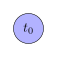
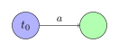
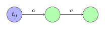
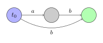
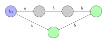
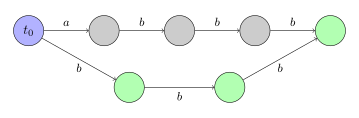
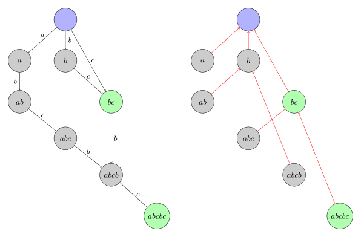
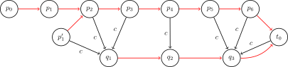
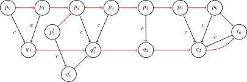

OI Wiki · prijevod · StringoviOI Wiki · translation · Strings
Sufiksni automat (SAM)Suffix automaton (SAM)
Sadržaj
- Oznake
- Pregled sufiksnog automata
- Definicija
- Algoritam izgradnje linearne složenosti
- Daljnja svojstva
- Primjene
- Provjera pojavljuje li se niz
- Broj različitih podnizova
- Ukupna duljina svih različitih podnizova
- Leksikografski k-ti najmanji podniz
- Najmanji ciklički pomak
- Broj pojavljivanja
- Pozicija prvog pojavljivanja
- Sve pozicije pojavljivanja
- Najkraći niz koji se ne pojavljuje
- Najdulji zajednički podniz dvaju nizova
- Najdulji zajednički podniz više nizova
- Zadaci
- Literatura
Oznake
- \(\Sigma\): abeceda. Veličinu abecede označavamo \(|\Sigma|\).
- \(s\): niz znakova. Duljina niza je \(|s| = n\), indeksi počinju od \(0\).
- \(t_0\): početno stanje.
- \(\operatorname{endpos}(t)\): skup završnih pozicija podniza \(t\) u nizu \(s\).
- \(\operatorname{link}(v)\): sufiksna poveznica stanja \(v\).
- \(\operatorname{len}(v)\): duljina najduljeg podniza koji odgovara stanju \(v\).
- \(\operatorname{longest}(v)\): najdulji podniz koji odgovara stanju \(v\).
- \(\operatorname{minlen}(v)\): duljina najkraćeg podniza koji odgovara stanju \(v\).
- \(\operatorname{shortest}(v)\): najkraći podniz koji odgovara stanju \(v\).
Pregled sufiksnog automata
Sufiksni automat (suffix automaton, SAM) moćna je struktura podataka kojom se može riješiti mnogo problema vezanih uz nizove znakova.
Primjerice, sljedeći se problemi na nizovima mogu pomoću SAM-a riješiti u linearnom vremenu:
- pronaći sva pojavljivanja jednog niza u drugom nizu;
- izračunati koliko različitih podnizova ima zadani niz.
Intuitivno, SAM niza može se shvatiti kao sažeti oblik svih podnizova zadanog niza. Vrijedi istaknuti da SAM sve te informacije pohranjuje u izrazito sažetom obliku. Za niz duljine \(n\) njegova je prostorna složenost samo \(O(n)\). Štoviše, i vremenska složenost izgradnje SAM-a iznosi samo \(O(n)\). Preciznije, za \(n\ge 3\) SAM ima najviše \(2n-1\) čvorova i \(3n-4\) prijelaza.
Definicija
SAM niza \(s\) najmanji je DFA koji prihvaća sve sufikse niza \(s\).
Drugim riječima:
- SAM je usmjereni aciklički graf. Čvorovi se nazivaju stanja, a bridovi prijelazi među stanjima.
- Graf ima izvor \(t_0\), koji se naziva početno stanje, i svi su ostali čvorovi dostupni iz \(t_0\).
- Svaki je prijelaz označen nekim znakom. Svi prijelazi iz istog čvora međusobno su različiti.
- Postoji jedno ili više završnih stanja. Ako iz početnog stanja \(t_0\) prijelazima na kraju stignemo u završno stanje, spoj oznaka svih prijelaza na tom putu nužno je sufiks niza \(s\). Obrnuto, svaki sufiks niza \(s\) može se dobiti nekim putem od \(t_0\) do nekog završnog stanja.
- Među svim automatima koji zadovoljavaju gornje uvjete SAM ima najmanji broj čvorova.
Ključ SAM-a upravo je u toj minimalnosti. Zapravo, i izravna izgradnja trieja nad svim sufiksima niza \(s\) (tzv. sufiksni trie) daje DFA koji prihvaća sve sufikse niza \(s\). No u najgorem slučaju tako dobiveni automat ima \(\Theta(n^2)\) čvorova, što je neprihvatljivo. Iz primjera u nastavku vidi se da u DFA-u dobivenom izgradnjom trieja nad svim sufiksima mnogo čvorova ponavlja iste informacije, pa se mogu spojiti. SAM to spajanje čvorova dovodi do krajnosti i tako veličinu dobivenog DFA-a drži u \(O(n)\). U tom je smislu SAM „sažeti” trie svih sufiksa niza.
Podnizovi i putovi
Najjednostavnije i ujedno najvažnije svojstvo SAM-a jest da sadrži informacije o svim podnizovima niza \(s\). Za svaki put koji počinje u početnom stanju \(t_0\), ako zapišemo oznake svih prijelaza na njemu, dobivamo podniz niza \(s\). Obrnuto, svaki podniz niza \(s\) odgovara nekom putu koji počinje u \(t_0\).
Radi jednostavnosti kažemo da podniz odgovara tom putu (koji počinje u \(t_0\) i čije oznake prijelaza čine taj podniz). Obrnuto, kažemo da svaki put odgovara nizu koji čine njegove oznake.
Do nekog stanja može voditi više putova, pa kažemo da stanje odgovara skupu nizova, pri čemu nizovi iz tog skupa odgovaraju tim putovima.
Jednostavni primjeri
Ovdje ćemo prikazati sufiksne automate nekoliko jednostavnih nizova.
Početno stanje označeno je plavom, a završna stanja zelenom bojom.
Za niz \(s=\varepsilon\):

Za niz \(s=\texttt{a}\):

Za niz \(s=\texttt{aa}\):

Za niz \(s=\texttt{ab}\):

Za niz \(s=\texttt{abb}\):

Za niz \(s=\texttt{abbb}\):

U posljednjem se primjeru vidi da bi, kad bismo izravno izgradili trie svih sufiksa, putovi \(\texttt{bbb}\) i \(\texttt{abbb}\) vodili u različite čvorove; no oba su ta čvora završna stanja i, koji god znak dodali, ne možemo dobiti dulje podudaranje, što znači da se ta dva čvora u pogledu prijelaza automata ponašaju jednako te se mogu spojiti u jedan čvor. Tako se dobiva SAM prikazan na slici. U nastavku ćemo ideju spajanja čvorova proširiti na sve slučajeve i pokazati da, uz razumno spajanje čvorova, konačni SAM ima samo \(O(n)\) čvorova i prijelaza.
Algoritam izgradnje linearne složenosti
Prije nego što opišemo algoritam izgradnje SAM-a u linearnom vremenu, moramo uvesti dva pojma iznimno važna za razumijevanje postupka izgradnje i ukratko dokazati njihova svojstva. Završne pozicije \(\operatorname{endpos}\) definiraju čvorove SAM-a (tj. daju nužan i dovoljan uvjet za spajanje čvorova), a sufiksna poveznica \(\operatorname{link}\) samo je prirodna inačica pokazivača neuspjeha iz Aho–Corasick automata u SAM-u.
Završne pozicije endpos
Promotrimo proizvoljan neprazan podniz \(t\) niza \(s\) i označimo s \(\operatorname{endpos}(t)\) skup svih završnih pozicija podniza \(t\) u nizu \(s\) (pretpostavljamo da se znakovi niza indeksiraju od nule). Primjerice, za niz \(\texttt{abcbc}\) vrijedi \(\operatorname{endpos}(\texttt{bc})=\{2,4\}\).
Dva podniza \(t_1\) i \(t_2\) mogu imati potpuno iste završne pozicije: \(\operatorname{endpos}(t_1)=\operatorname{endpos}(t_2)\). To definira relaciju ekvivalencije među podnizovima niza \(s\). Svi neprazni podnizovi niza \(s\) mogu se prema svojim skupovima završnih pozicija \(\operatorname{endpos}\) podijeliti u klase ekvivalencije.
Činjenica je da svaka takva klasa ekvivalencije odgovara jednom stanju SAM-a1. Drugim riječima, čim dva podniza imaju iste završne pozicije, njihovi putovi u SAM-u završavaju u istom stanju. Rečeno drukčije, svako nepočetno stanje SAM-a odgovara jednom ili više nepraznih podnizova s istim \(\operatorname{endpos}\). Ukratko, stanja SAM-a upravo su klase ekvivalencije svih nepraznih podnizova, uz dodatak početnog stanja.
Prihvatimo zasad tu činjenicu; na njoj ćemo temeljiti algoritam izgradnje SAM-a. Pokazat ćemo i da su sva svojstva koja SAM mora zadovoljavati, osim minimalnosti, ispunjena; minimalnost pak slijedi iz Myhill–Nerodeova teorema.
Iz vrijednosti \(\operatorname{endpos}\) možemo izvesti nekoliko važnih zaključaka koji objašnjavaju odnos među različitim podnizovima koji odgovaraju istom stanju.
Lema 1
Dva neprazna podniza \(u\) i \(w\) niza \(s\) (pretpostavimo \(\left|u\right|\le \left|w\right|\)) imaju isti \(\operatorname{endpos}\) ako i samo ako se niz \(u\) pri svakom pojavljivanju u \(s\) pojavljuje kao sufiks niza \(w\).
Dokaz
Lema je očita. Ako \(u\) i \(w\) imaju isti \(\operatorname{endpos}\), onda je \(u\) sufiks niza \(w\) i u \(s\) se pojavljuje samo kao sufiks niza \(w\). Obrnuto, prema definiciji, ako je \(u\) sufiks niza \(w\) i u \(s\) se pojavljuje samo kao sufiks niza \(w\), onda ta dva podniza imaju isti \(\operatorname{endpos}\).
Lema 2
Promotrimo dva neprazna podniza \(u\) i \(w\) (pretpostavimo \(\left|u\right|\le \left|w\right|\)). Tada je ili \(\operatorname{endpos}(u)\cap \operatorname{endpos}(w)=\varnothing\) ili \(\operatorname{endpos}(w)\subseteq \operatorname{endpos}(u)\), ovisno o tome je li \(u\) sufiks niza \(w\):
Dokaz
Ako skupovi \(\operatorname{endpos}(u)\) i \(\operatorname{endpos}(w)\) imaju bar jedan zajednički element, onda nizovi \(u\) i \(w\) završavaju na istoj poziciji, pa je \(u\) sufiks niza \(w\). Stoga se na svakoj poziciji na kojoj se pojavljuje \(w\) pojavljuje i podniz \(u\). Dakle \(\operatorname{endpos}(w)\subseteq \operatorname{endpos}(u)\).
Lema 3
Promotrimo jednu klasu ekvivalencije podnizova s istim \(\operatorname{endpos}\) i poredajmo sve podnizove u klasi po padajućoj duljini. Tada je svaki podniz točno za \(1\) kraći od prethodnoga i ujedno je sufiks prethodnoga. Drugim riječima, za bilo koja dva podniza iste klase ekvivalencije kraći je sufiks duljega, a duljine podnizova u klasi su uzastopne i poprimaju sve cjelobrojne vrijednosti nekog intervala.
Dokaz
Ako klasa ekvivalencije sadrži samo jedan podniz, lema očito vrijedi. Razmotrimo sada klase ekvivalencije s više od \(1\) podniza.
Prema lemi 1, od dvaju različitih nizova s istim \(\operatorname{endpos}\) jedan je nužno dulji, a drugi kraći, i kraći je uvijek pravi sufiks duljega. Dakle, u klasi ekvivalencije nema nizova jednake duljine.
Neka je \(w\) najdulji niz u klasi, a \(u\) najkraći. Prema lemi 1, niz \(u\) pravi je sufiks niza \(w\). Promotrimo sada proizvoljan sufiks niza \(w\) duljine iz intervala \([\left|u\right|,\left|w\right|]\). Lako se vidi da je i taj sufiks u istoj klasi ekvivalencije, jer se u nizu \(s\) može pojaviti samo kao sufiks niza \(w\) (zato što se kraći sufiks \(u\) u \(s\) pojavljuje samo kao sufiks niza \(w\)). Stoga, prema lemi 1, taj sufiks i niz \(w\) imaju isti \(\operatorname{endpos}\).
Ukratko: podnizovi koji odgovaraju istom stanju imaju međusobno različite duljine koje čine uzastopne prirodne brojeve, a kraći su uvijek sufiksi duljih podnizova.
Sufiksna poveznica link
Promotrimo neko stanje \(v\neq t_0\) u SAM-u. Već znamo da stanje \(v\) odgovara klasi ekvivalencije podnizova s istim \(\operatorname{endpos}\). Ako s \(w\) označimo najdulji od tih nizova, svi su ostali nizovi sufiksi niza \(w\).
Znamo i da prvih nekoliko sufiksa niza \(w\) (gledano po padajućoj duljini) pripada toj klasi ekvivalencije, dok su ostali sufiksi (barem jedan — prazni sufiks) u drugim klasama. Neka je \(t\) najdulji među tim ostalim sufiksima; tada sufiksnu poveznicu stanja \(v\) usmjeravamo na stanje koje odgovara klasi ekvivalencije niza \(t\).
Drugim riječima, stanje na koje pokazuje sufiksna poveznica \(\operatorname{link}(v)\) stanja \(v\) odgovara najduljem sufiksu niza \(w\) čiji se skup \(\operatorname{endpos}\) razlikuje od njegova, odnosno najduljem sufiksu niza \(w\) koji se u \(s\) pojavljuje više puta nego \(w\).
Radi jednostavnosti dogovorimo se da klasa ekvivalencije početnog stanja \(t_0\) sadrži samo prazni niz te da je \(\operatorname{endpos}(t_0)=\{-1,0,\ldots,\left|s\right|-1\}\).
Lema 4
Sve sufiksne poveznice tvore stablo s korijenom \(t_0\).
Dokaz
Promotrimo proizvoljno stanje \(v\neq t_0\); stanje na koje pokazuje sufiksna poveznica \(\operatorname{link}(v)\) odgovara strogo kraćim nizovima (definicija sufiksne poveznice, lema 3). Stoga, krećući se po sufiksnim poveznicama, uvijek stižemo u početno stanje \(t_0\) koje odgovara praznom nizu.
Lema 5
Stablo čiji su čvorovi skupovi \(\operatorname{endpos}\), a bridovi relacija sadržavanja među skupovima (tj. skup \(\operatorname{endpos}\) svakog djeteta sadržan je u skupu \(\operatorname{endpos}\) roditelja) jednako je stablu izgrađenom od sufiksnih poveznica \(\operatorname{link}\).
Dokaz
Prema lemi 2, skupovi \(\operatorname{endpos}\) bilo kojeg SAM-a tvore stablo (jer su dva skupa ili disjunktna ili je jedan podskup drugoga).
Promotrimo sada proizvoljno stanje \(v\neq t_0\) i njegovu sufiksnu poveznicu \(\operatorname{link}(v)\); iz definicije sufiksne poveznice i leme 2 dobivamo
Uočimo da ovdje treba stajati \(\subsetneq\), a ne \(\subseteq\), jer kad bi bilo \(\operatorname{endpos}(v)=\operatorname{endpos}(\operatorname{link}(v))\), stanja \(v\) i \(\operatorname{link}(v)\) trebala bi biti spojena u jedan čvor.
Štoviše, \(\operatorname{endpos}(\operatorname{link}(v))\) upravo je najmanji skup \(\operatorname{endpos}\) koji pravo sadrži \(\operatorname{endpos}(v)\).
Zajedno s prethodnim lemama slijedi: stablo sufiksnih poveznica u biti je stablo skupova \(\operatorname{endpos}\).
Slijedi primjer stabla sufiksnih poveznica koje nastaje izgradnjom SAM-a za niz \(\texttt{abcbc}\); čvorovi su označeni najduljim podnizom pripadne klase ekvivalencije.

Steknemo li uz sliku određeni osjećaj za sufiksni automat, to će pomoći u razumijevanju algoritma izgradnje i primjena u nastavku.
Objašnjenje slike
- U SAM-u postoji najdulji put čije su oznake upravo sam niz \(\texttt{abcbc}\). Taj put počinje u početnom stanju, a svako stanje kroz koje prolazi odgovara nekom prefiksu niza \(\texttt{abcbc}\) (\(\varepsilon,\texttt{a},\texttt{ab},\texttt{abc},\texttt{abcb},\texttt{abcbc}\)). Ta su stanja ključna u kasnijim primjenama.
-
Stablo sufiksnih poveznica može se shvatiti kao „sažetak” putova kojima se ta „prefiksna stanja” po sufiksnim poveznicama kreću prema korijenu (tj. početnom stanju).
- Duž svakog takvog puta skupovi nizova koji odgovaraju čvorovima čine particiju skupa svih sufiksa pripadnog prefiksa. Primjerice, put od stanja označenog \(\texttt{abcbc}\) po sufiksnim poveznicama do korijena glasi \(\texttt{abcbc}\rightarrow\texttt{bc}\rightarrow\varepsilon\). Pritom čvor \(\texttt{abcbc}\) zapravo odgovara skupu nizova \(\{\texttt{abcbc},\texttt{bcbc},\texttt{cbc}\}\), čvor \(\texttt{bc}\) skupu \(\{\texttt{bc},\texttt{c}\}\), a čvor \(\varepsilon\) praznom nizu.
- Različiti putovi mogu dijeliti isti čvor, i zato govorimo o „sažimanju”. Primjerice, putovi \(\texttt{abc}\rightarrow\texttt{bc}\rightarrow\varepsilon\) i \(\texttt{abcbc}\rightarrow\texttt{bc}\rightarrow\varepsilon\) dijele čvor \(\texttt{bc}\). Razlog je to što je \(\operatorname{endpos}(\texttt{bc})=\{2,4\}\), a nizu \(\texttt{bc}\) koji završava na poziciji \(2\) neposredno prethodi znak \(\texttt{a}\), dok nizu \(\texttt{bc}\) koji završava na poziciji \(4\) neposredno prethodi znak \(\texttt{c}\); stoga se pri dodavanju znaka sprijeda (tj. kretanju suprotno od sufiksnih poveznica) skup završnih pozicija (tj. stanje) razdvaja.
- Stablo sufiksnih poveznica treba samo razumno „sažeti” te sufiksne putove, bez razmatranja drugih čvorova. Naime, svaki je podniz sufiks nekog prefiksa, pa se nužno pojavljuje na nekom takvom putu. Algoritam izgradnje u nastavku u biti dodaje znak po znak i za svaki novi prefiks gradi takav sufiksni put te ga razumno „sažima” u već postojeće putove (tj. ne gradi ponovno već postojeća stanja i prijelaze).
- Završna su stanja upravo svi čvorovi na sufiksnom putu samog niza \(\texttt{abcbc}\).
-
Prijelazi koji vode u isto stanje nužno imaju istu oznaku, a njihova se polazišta nalaze na nekom (neprekinutom) putu u stablu sufiksnih poveznica. Primjerice, u stanje \(\texttt{abcb}\) prelaze dva stanja: \(\texttt{abc}\) i \(\texttt{bc}\). Ona leže na putu \(\texttt{abc}\rightarrow\texttt{bc}\) u stablu sufiksnih poveznica. Uočimo da ona odgovaraju skupovima nizova \(\{\texttt{abc}\}\) odnosno \(\{\texttt{bc},\texttt{c}\}\); dodamo li tim nizovima na kraj znak \(\texttt{b}\), dobivamo skup nizova \(\{\texttt{abcb},\texttt{bcb},\texttt{cb}\}\) koji odgovara stanju \(\texttt{abcb}\).
- Nakon dodavanja znaka različita stanja mogu prijeći u isto stanje zato što se dodavanjem znaka na kraj broj pojavljivanja može samo smanjiti, pa izvorno različiti skupovi završnih pozicija mogu postati jednaki.
-
U stablu sufiksnih poveznica skup \(\operatorname{endpos}\) svakog čvora unija je skupova \(\operatorname{endpos}\) njegove djece, uvećana za najviše jednu poziciju. Ta nova pozicija postoji ako i samo ako čvor odgovara upravo prefiksu izvornog niza koji završava na toj poziciji. Budući da na slici nijedan unutarnji čvor stabla sufiksnih poveznica (koji nije ni korijen ni list) ne odgovara prefiksu niza \(\texttt{abcbc}\), takav se slučaj ondje ne pojavljuje.
Sufiksni automat pohranjuje informacije o svim podnizovima niza. To se može razumjeti iz dvaju kutova:
- Sam SAM može se shvatiti kao sažeta inačica trieja svih sufiksa niza. Stoga pohranjuje informacije o svim prefiksima svih sufiksa niza, što je isto što i informacije o svim podnizovima niza.
- Stablo sufiksnih poveznica SAM-a može se shvatiti kao sažeta inačica sufiksnih putova svih prefiksa niza. Stoga pohranjuje informacije o svim sufiksima svih prefiksa niza, što je također isto što i informacije o svim podnizovima niza.
Oba su ta gledišta korisna pri rješavanju različitih problema.
Sažetak
Prije nego što nastavimo s raspravom o samom algoritmu, sažmimo dosadašnje i uvedimo nekoliko pomoćnih oznaka.
-
Podnizovi niza \(s\) mogu se prema svojim skupovima završnih pozicija \(\operatorname{endpos}\) podijeliti u više klasa ekvivalencije.
-
SAM se sastoji od početnog stanja \(t_0\) i po jednog stanja za svaku klasu ekvivalencije \(\operatorname{endpos}\) (nepraznih podnizova).
-
Svakom stanju \(v\) odgovara jedan ili više podnizova. Najdulji od njih označavamo \(\operatorname{longest}(v)\), a njegovu duljinu \(\operatorname{len}(v)\). Slično, najkraći podniz označavamo \(\operatorname{shortest}(v)\), a njegovu duljinu \(\operatorname{minlen}(v)\). Tada su svi nizovi koji odgovaraju tom stanju različiti sufiksi niza \(\operatorname{longest}(v)\), a njihove duljine poprimaju točno sve cijele brojeve iz intervala \([\operatorname{minlen}(v),\operatorname{len}(v)]\).
-
Za svako stanje \(v\neq t_0\) sufiksnu poveznicu definiramo kao brid prema stanju koje odgovara sufiksu niza \(\operatorname{longest}(v)\) duljine \(\operatorname{minlen}(v)-1\). Sve sufiksne poveznice tvore stablo s korijenom \(t_0\). To stablo ujedno prikazuje relaciju sadržavanja među skupovima \(\operatorname{endpos}\).
-
Za svako stanje \(v\neq t_0\) vrijednost \(\operatorname{minlen}(v)\) može se izraziti preko sufiksne poveznice \(\operatorname{link}(v)\):
\[ \operatorname{minlen}(v)=\operatorname{len}(\operatorname{link}(v))+1. \] -
Krenemo li iz proizvoljnog stanja \(v_0\) po sufiksnim poveznicama, uvijek stižemo u početno stanje \(t_0\). Pritom dobivamo niz međusobno disjunktnih intervala \([\operatorname{minlen}(v_i),\operatorname{len}(v_i)]\) čija unija tvori neprekinuti interval \([0,\operatorname{len}(v_0)]\).
Algoritam
Sada možemo opisati algoritam izgradnje SAM-a. Algoritam je online: znakove niza možemo dodavati jedan po jedan i u svakom koraku odgovarajuće održavati SAM.
Prije detaljne implementacije, najprije na slikama steknimo dojam o tome kako se SAM može promijeniti pri dodavanju novog znaka \(c\).
Jednostavno razumijevanje inkrementalne izgradnje
Na temelju SAM-a niza \(s\) može se izgraditi SAM niza \(s+c\). Prema ranijem objašnjenju slike, dovoljno je izgraditi sufiksni put novog prefiksa (tj. niza \(s+c\)) i sažeti ga u postojeće putove. Štoviše, prema ranijem opisu, svi čvorovi na novom sufiksnom putu nužno se mogu dobiti prijelazom po znaku \(c\) iz čvorova na sufiksnom putu izvornog niza \(s\).
Najprije razmotrimo kakav oblik može imati sufiksni put izvornog niza \(s\) prije dodavanja novog znaka \(c\) i kako prelazi po znaku \(c\). Najopćenitiji slučaj prikazan je na sljedećoj slici:

Na slici je sufiksni put izvornog niza \(s\) jednak \(p_0\rightarrow p_1\rightarrow\cdots\rightarrow p_6\rightarrow t_0\), a sufiksne poveznice prikazane su crvenim strelicama. Neki od tih čvorova (naime \(p_2\sim p_6\)) već imaju prijelaz po znaku \(c\); budući da dodavanje istog znaka uzastopnim sufiksima opet daje uzastopne sufikse, odredišta tih prijelaza tvore drugi sufiksni put \(q_1\rightarrow q_2\rightarrow q_3\rightarrow t_0\). Ovdje su dva zapažanja:
-
Na sufiksnom putu izvornog niza \(s\) čvorovi bez prijelaza po \(c\) nužno su prvih nekoliko čvorova. Čim od nekog čvora (na slici \(p_2\)) postoji prijelaz po \(c\), i svi sljedeći čvorovi na putu imaju prijelaz po \(c\).
Objašnjenje: neka je \(s_2=\operatorname{longest}(p_2)\); tada svi sljedeći čvorovi odgovaraju sufiksima niza \(s_2\), pa ako se \(s_2+c\) pojavljuje u \(s\), onda se u \(s\) pojavljuje i svaki sufiks niza \(s_2\) s dodanim \(c\), pa svi ti čvorovi imaju prijelaz po \(c\).
-
Iako su čvorovi koji po znaku \(c\) prelaze u čvor \(q_i\) nužno neprekinuti segment u stablu sufiksnih poveznica, taj segment ne mora cijeli ležati na sufiksnom putu od \(p_0\) do korijena. Točnije, samo početnih nekoliko čvorova segmenta koji pripada prvom čvoru \(q_1\) možda nije na tom sufiksnom putu. Primjerice, čvoru \(q_1\) na slici odgovara segment \(p_1'\rightarrow p_2\rightarrow p_3\), pri čemu \(p_1'\) nije na sufiksnom putu od \(p_0\).
Objašnjenje: neka je \(s_2=\operatorname{longest}(p_2)\); tada \(s_2+c\) odgovara čvoru \(q_1\), ali na slici je očito \(s_2+c\neq\operatorname{longest}(q_1)\), jer je potonji jednak \(\operatorname{longest}(p'_1)+c\). To znači da se dio nizova koji odgovaraju \(q_1\) ne može dobiti prijelazom iz \(s_2\) i njegovih sufiksa. Obrnuto, nizovi u \(q_2\) nužno su sufiksi niza \(s_2+c\), pa su nakon brisanja završnog \(c\) nužno sufiksi niza \(s_2\). Dakle, čvorovi koji po \(c\) prelaze u \(q_2\) nužno su na sufiksnom putu koji počinje u \(p_2\). Zato samo dio segmenta koji pripada početnom čvoru \(q_1\) možda nije na sufiksnom putu od \(p_0\).
Što se u ovom prikazu mijenja ako na kraj izvornog niza \(s\) dodamo znak \(c\) i izgradimo odgovarajući sufiksni put? Odgovor je na sljedećoj slici:

Budući da se čvor \(q_0\) dobiva prijelazom po znaku \(c\) iz čvora \(p_0\) koji odgovara izvornom nizu \(s\), on odgovara novom nizu \(s+c\). Stoga je njegov sufiksni put \(q_0\rightarrow q_1''\rightarrow q_2\rightarrow q_3\rightarrow t_0\) upravo novi sufiksni put. Ako je čvor \(p_i\) na izvornom sufiksnom putu već imao prijelaz po \(c\), novi sufiksni put nužno prolazi kroz čvorove u koje ti prijelazi vode, pa se stari čvorovi mogu izravno ponovno iskoristiti. Na novom sufiksnom putu postoji točno jedan potpuno novi čvor, \(q_0\), koji prima prijelaze iz onih početnih čvorova izvornog sufiksnog puta koji nisu imali prijelaz po \(c\).
Osim tih očitih činjenica, uočimo da je i stari čvor \(q_1\) jednom kopiran, odnosno razdvojen na dva čvora \(q'_1\rightarrow q_1''\). Razlog je to što se novi sufiksni put samo djelomično preklapa s postojećim putem: od nizova koji odgovaraju starom čvoru \(q_1\) samo se kraći (tj. oni u koje mogu prijeći čvorovi \(p_2\) i \(p_3\)) pojavljuju na novom sufiksnom putu, dok se dulji (tj. oni u koje može prijeći čvor \(p_1'\)) na njemu ne pojavljuju; stoga novi sufiksni put može proći samo kroz dio čvora \(q_1\), pa se on mora razdvojiti na dva čvora kako bi se taj slučaj prikazao. Iz istog razloga, kako je već objašnjeno, u čvorove \(q_2\) i \(q_3\) nakon \(q_1\) ne može se prijeći iz čvorova koji nisu na sufiksnom putu od \(p_0\), pa se svi nizovi koji im odgovaraju pojavljuju na novom sufiksnom putu i razdvajanje nije potrebno.
Gledano kroz značenje stanja u SAM-u, svako je stanje jedan skup \(\operatorname{endpos}\). Neka je \(i\) nova završna pozicija nastala produljenjem niza; tada je novi čvor \(q_0\) skup završnih pozicija \(\{i\}\), razdvojeni čvorovi \(q_1'\) i \(q_1''\) odgovaraju skupovima \(\operatorname{endpos}(q_1)\) odnosno \(\operatorname{endpos}(q_1)\cup\{i\}\), a sljedeći čvorovi \(q_2\) i \(q_3\) zapravo su svojim postojećim skupovima završnih pozicija dodali \(i\). Drugim riječima, iako se \(q_2\) i \(q_3\) i njihovi prijelazi nisu promijenili, njihovi su se skupovi \(\operatorname{endpos}\) doista proširili.
Gore je opisan najsloženiji, najopćenitiji slučaj (tj. slučaj 3 u nastavku). U praksi čvor \(p'_1\) možda ne postoji, pa razdvajanje nije potrebno (tj. slučaj 2 u nastavku). Da bismo to prepoznali, dovoljno je provjeriti vrijedi li \(\operatorname{longest}(q_1)=\operatorname{longest}(p_2)+c\), odnosno \(\operatorname{len}(q_1)=\operatorname{len}(p_2)+1\). Moguće je i da nijedan čvor na sufiksnom putu od \(p_0\) nema prijelaz po \(c\); tada je dovoljno stvoriti novi čvor \(q_0\) (tj. slučaj 1 u nastavku).
Kad smo svladali ideju dodavanja sufiksnog puta, razmotrimo konkretne korake inkrementalne izgradnje.
Postupak
Da bismo zajamčili linearnu prostornu složenost, pamtit ćemo samo vrijednosti \(\operatorname{len}\) i \(\operatorname{link}\) te popis prijelaza svakog stanja; završna stanja nećemo označavati (ali ćemo poslije pokazati kako te oznake dodijeliti nakon izgradnje SAM-a).
Na početku SAM sadrži samo jedno stanje \(t_0\) s brojem \(0\) (ostala stanja dobivaju brojeve \(1,2,\ldots\)). Radi jednostavnosti za stanje \(t_0\) postavljamo \(\operatorname{len}(t_0)=0\) i \(\operatorname{link}(t_0)=-1\) (\(-1\) označava virtualno stanje).
Sada treba samo implementirati postupak dodavanja jednog znaka \(c\) na kraj trenutačnog niza. Tijek algoritma je sljedeći:
Postupak inkrementalne izgradnje SAM-a
- Neka je \(\textit{last}\) stanje koje odgovara cijelom nizu prije dodavanja znaka \(c\) (na početku postavljamo \(\textit{last}=0\), a u posljednjem koraku algoritma ažuriramo \(\textit{last}\)).
- Stvorimo novo stanje \(\textit{cur}\) i postavimo \(\operatorname{len}(\textit{cur})=\operatorname{len}(\textit{last})+1\); vrijednost \(\operatorname{link}(\textit{cur})\) zasad je nepoznata.
- Zatim provodimo sljedeći postupak: počevši od stanja \(\textit{last}\), ako trenutačno stanje još nema prijelaz označen znakom \(c\), dodajemo prijelaz po znaku \(c\) u stanje \(\textit{cur}\) i pomičemo se po sufiksnoj poveznici. Ako pritom naiđemo na stanje koje već ima prijelaz po znaku \(c\), zaustavljamo se i to stanje označavamo \(p\).
- Slučaj 1: ako takvo stanje \(p\) nismo pronašli, stigli smo u virtualno stanje \(-1\); postavljamo \(\operatorname{link}(\textit{cur})=0\) i prelazimo na posljednji korak.
- Pretpostavimo sada da smo pronašli stanje \(p\) koje ima prijelaz po znaku \(c\). Stanje u koje taj prijelaz vodi označimo \(q\). Tada je ili \(\operatorname{len}(p)+1=\operatorname{len}(q)\) ili \(\operatorname{len}(p)+1<\operatorname{len}(q)\).
- Slučaj 2: ako je \(\operatorname{len}(p)+1=\operatorname{len}(q)\), samo postavimo \(\operatorname{link}(\textit{cur})=q\) i prijeđemo na posljednji korak.
-
Slučaj 3: inače je nešto složenije i stanje \(q\) treba klonirati: stvaramo novo stanje \(\textit{clone}\) i kopiramo sve informacije stanja \(q\) osim vrijednosti \(\operatorname{len}\) (sufiksnu poveznicu i prijelaze). Postavljamo \(\operatorname{len}(\textit{clone})=\operatorname{len}(p)+1\).
Nakon kloniranja sufiksnu poveznicu iz \(\textit{cur}\) usmjeravamo na \(\textit{clone}\), a također i iz \(q\) na \(\textit{clone}\).
Na kraju se od stanja \(p\) vraćamo po sufiksnim poveznicama i, dok god posjećeno stanje ima prijelaz u stanje \(q\), taj prijelaz preusmjeravamo na stanje \(\textit{clone}\).
-
Nakon obrade bilo kojeg od tri slučaja ažuriramo \(\textit{last}\) na stanje \(\textit{cur}\).
Želimo li još znati koja su stanja završna, a koja nisu, sva završna stanja možemo pronaći nakon što izgradimo potpuni SAM niza \(s\). U tu svrhu krenemo od stanja koje odgovara cijelom nizu (pohranjeno u varijabli \(\textit{last}\)) i pratimo njegove sufiksne poveznice dok ne stignemo u početno stanje. Sva posjećena stanja označimo kao završna. Lako je uvidjeti da tako označavamo točno sve sufikse niza \(s\), a to su upravo završna stanja.
Budući da za svaki znak niza \(s\) stvaramo jedno ili dva nova stanja, SAM sadrži samo linearno mnogo stanja. To da SAM ima i linearno mnogo prijelaza te da je ukupno vrijeme rada algoritma linearno još nije jasno i bit će objašnjeno u nastavku.
Objašnjenje
Detaljno ćemo objasniti pojedinosti svakog koraka algoritma i pokazati njegovu ispravnost.
Detaljno objašnjenje algoritma
-
Ako prijelaz \((p,q)\) zadovoljava \(\operatorname{len}(p)+1=\operatorname{len}(q)\), kažemo da je kontinuiran. Inače, tj. kad je \(\operatorname{len}(p)+1<\operatorname{len}(q)\), prijelaz zovemo nekontinuiranim.
Iz opisa algoritma vidi se da se kontinuirani i nekontinuirani prijelazi u algoritmu obrađuju različito. Kontinuirani su prijelazi fiksni i više ih ne mijenjamo. Nasuprot tome, pri umetanju novog znaka u niz nekontinuirani prijelazi mogu se promijeniti (krajevi brida prijelaza mogu se promijeniti).
-
Radi izbjegavanja dvosmislenosti, niz prije umetanja trenutačnog znaka \(c\) u SAM označavamo \(s\).
- Algoritam počinje stvaranjem novog stanja \(\textit{cur}\), koje odgovara cijelom nizu \(s+c\). Razlog za stvaranje novog čvora jasan je: ujedno stvaramo i novu klasu ekvivalencije.
-
Nakon stvaranja novog stanja krećemo se od stanja \(\textit{last}\), koje odgovara cijelom nizu \(s\), po sufiksnim poveznicama. Za svako posjećeno stanje pokušavamo dodati prijelaz po znaku \(c\) u novo stanje \(\textit{cur}\).
No smijemo dodavati samo prijelaze koji nisu u sukobu s postojećima. Stoga se, čim naiđemo na postojeći prijelaz po \(c\), moramo zaustaviti.
-
Najjednostavniji je slučaj kad stignemo u virtualno stanje \(-1\); to znači da smo svim sufiksima niza \(s\) dodali prijelaz po \(c\). To ujedno znači da se znak \(c\) nikad prije nije pojavio u nizu \(s\). Stoga je sufiksna poveznica stanja \(\textit{cur}\) stanje \(0\).
-
Inače (tj. u slučajevima 2 i 3) pronašli smo postojeći prijelaz \((p,q)\). To znači da pokušavamo u automat dodati niz \(x+c\) koji već postoji (pri čemu je \(x=\operatorname{longest}(p)\) sufiks niza \(s\), a niz \(x+c\) već se pojavio kao podniz niza \(s\)). Budući da pretpostavljamo da je automat niza \(s\) ispravno izgrađen, ovdje ne smijemo dodati novi prijelaz.
Teškoća je, međutim, u pitanju: na koje stanje treba pokazivati sufiksna poveznica iz stanja \(\textit{cur}\)? Sufiksnu poveznicu moramo usmjeriti na stanje čiji je najdulji niz upravo \(x+c\), tj. čiji je \(\operatorname{len}\) jednak \(\operatorname{len}(p)+1\). No takvo stanje možda ne postoji, tj. \(\operatorname{len}(q)>\operatorname{len}(p)+1\). U tom slučaju takvo stanje moramo stvoriti razdvajanjem stanja \(q\).
-
Naravno, ako je prijelaz \((p,\,q)\) kontinuiran, onda je \(\operatorname{len}(q)=\operatorname{len}(p)+1\). Tada je sve jednostavno: samo sufiksnu poveznicu stanja \(\textit{cur}\) usmjerimo na stanje \(q\).
-
Inače je prijelaz nekontinuiran, tj. \(\operatorname{len}(q)>\operatorname{len}(p)+1\), što znači da stanje \(q\) ne odgovara samo sufiksu \(x+c\) duljine \(\operatorname{len}(p)+1\), nego i duljim podnizovima niza \(s\). Nemamo drugog izbora nego stanje \(q\) razdvojiti na dva podstanja, pri čemu duljina prvog podstanja postaje \(\operatorname{len}(p)+1\).
Kako razdvajamo stanje? Kloniramo stanje \(q\) u novo stanje \(\textit{clone}\) i postavimo \(\operatorname{len}(\textit{clone})=\operatorname{len}(p)+1\). Budući da ne želimo mijenjati putove koji prolaze kroz \(q\), kopiramo sve prijelaze stanja \(q\) u \(\textit{clone}\). Također sufiksnu poveznicu iz \(\textit{clone}\) postavljamo na odredište sufiksne poveznice stanja \(q\), a sufiksnu poveznicu stanja \(q\) postavljamo na \(\textit{clone}\).
Nakon razdvajanja stanja sufiksnu poveznicu iz \(\textit{cur}\) postavljamo na \(\textit{clone}\).
U posljednjem koraku neke prijelaze koji su izvorno vodili u \(q\) preusmjeravamo na \(\textit{clone}\). Koje prijelaze treba izmijeniti? Dovoljno je preusmjeriti prijelaze koji odgovaraju svim sufiksima niza \(x+c\) (gdje je \(x=\operatorname{longest}(p)\)). Drugim riječima, nastavljamo se kretati po sufiksnim poveznicama od čvora \(p\) sve do virtualnog stanja \(-1\) ili dok prijelaz trenutačnog stanja po \(c\) više ne pokazuje na stanje \(q\).
Linearna vremenska složenost
Pretpostavljamo da je veličina abecede konstantna, tj. da operacije traženja prijelaza po znaku, dodavanja prijelaza i pronalaženja sljedećeg prijelaza imaju vremensku složenost \(O(1)\). Ako prijelaze svakog čvora pohranimo i kao polje duljine \(\left|\Sigma\right|\) (za brzo pronalaženje prijelaza po zadanoj oznaci) i kao dinamičku listu (za brzo obilaženje svih postojećih prijelaza), trošeći prostor za vrijeme, vremenska složenost algoritma2 iznosi \(O(n)\), a prostorna \(O(n\left|\Sigma\right|)\).
Dokaz
Promotrimo li dijelove algoritma, postoje tri mjesta na kojima linearnost vremenske složenosti nije očita:
- prvo je obilazak sufiksnih poveznica od stanja \(\textit{last}\) uz dodavanje prijelaza po znaku \(c\);
- drugo je kopiranje prijelaza pri kloniranju stanja \(q\) u novo stanje \(\textit{clone}\);
- treće je izmjena prijelaza koji vode u \(q\) i njihovo preusmjeravanje na \(\textit{clone}\).
Koristimo činjenicu da je veličina SAM-a (broj stanja i prijelaza) linearna (dokaz linearnosti broja stanja sam je algoritam, a dokaz linearnosti broja prijelaza dat ćemo nakon implementacije algoritma).
Stoga je ukupna složenost prvog i drugog mjesta očito linearna, jer svaka pojedina operacija amortizirano dodaje automatu samo jedan novi prijelaz.
Ostaje procijeniti ukupnu složenost trećeg mjesta, gdje prijelaze koji su izvorno vodili u \(q\) preusmjeravamo na \(\textit{clone}\). Označimo \(v=\operatorname{longest}(p)\); to je sufiks niza \(s\). U svakoj iteraciji duljina niza \(v\) se smanjuje, pa se početna pozicija niza \(v\) kao sufiksa niza \(s\) nužno pomiče udesno. Stoga broj pomaka \(p\) po sufiksnim poveznicama u petlji ne premašuje udaljenost za koju se početna pozicija \(v\) kao sufiksa niza \(s\) pomaknula udesno. Budući da se \(p\) mora pomaknuti barem jednom da bi petlja završila i da je \(p\) barem rezultat jednog pomaka \(\textit{last}\) po sufiksnoj poveznici, pri završetku petlje početna pozicija \(v\) kao sufiksa niza \(s\) nije lijevo od početne pozicije niza \(\operatorname{longest}(\operatorname{link}(\operatorname{link}(\textit{last})))\). Štoviše, pri završetku petlje početna pozicija niza \(v\) kao sufiksa niza \(s\) upravo je početna pozicija niza \(v+c\) kao sufiksa niza \(s+c\), a kao sufiks niza \(s+c\) niz \(v+c\) upravo je niz \(\operatorname{longest}(\operatorname{link}(\operatorname{link}(\textit{cur})))\). Budući da je \(\textit{cur}\) nova vrijednost \(\textit{last}\), broj pomaka u petlji ne premašuje udaljenost za koju se početna pozicija niza \(\operatorname{longest}(\operatorname{link}(\operatorname{link}(\textit{last})))\) kao sufiksa trenutačnog niza pomaknula udesno između stare i nove vrijednosti, uvećanu za jedan (tj. za pomak nužan za završetak petlje).
Budući da pozicija niza \(\operatorname{longest}(\operatorname{link}(\operatorname{link}(\textit{last})))\) kao sufiksa trenutačnog niza tijekom cijele izgradnje SAM-a monotono raste3, njezin ukupni pomak ne premašuje \(n\). To pokazuje da broj iteracija petlje u kojoj mijenjamo prijelaze koji vode u \(q\) ne premašuje \(2n\). Upravo smo to trebali dokazati.
Naravno, ako veličina abecede nije konstantna, a ne želimo potrošiti \(O(n\left|\Sigma\right|)\) prostora, vremenska složenost SAM-a nije linearna. Prijelaze iz jednog čvora tada treba pohraniti u balansirano stablo koje podržava brzo pretraživanje i umetanje. Označimo li s \(\Sigma\) abecedu, a s \(\left|\Sigma\right|\) njezinu veličinu, asimptotska vremenska složenost algoritma je \(O(n\log\left|\Sigma\right|)\), a prostorna \(O(n)\).
Implementacija
Najprije implementiramo strukturu podataka koja pohranjuje sve informacije o jednom prijelazu. Po potrebi ovdje možete dodati oznaku završnog stanja ili neke druge informacije. Popis prijelaza pohranit ćemo u map, što nam omogućuje obradu cijelog niza u ukupno \(O(n)\) prostora i \(O(n\log\left|\Sigma\right|)\) vremena. Naravno, kad je veličina abecede \(\left|\Sigma\right|=K\) mala konstanta (npr. 26), prikladnije je next deklarirati kao int[K].
struct state {
int len, link;
std::map<char, int> next;
};
Sam SAM bit će pohranjen u polju struktura state. Pamtimo trenutačnu veličinu automata sz i varijablu last, stanje koje odgovara trenutačnom cijelom nizu.
constexpr int MAXLEN = 100000;
state st[MAXLEN * 2];
int sz, last;
Definiramo funkciju za inicijalizaciju SAM-a (stvara SAM sa samo početnim stanjem).
void sam_init() {
for (int i = 0; i < sz; i++) st[i].next.clear();
st[0].len = 0;
st[0].link = -1;
sz = 1;
last = 0;
}
Na kraju dajemo implementaciju glavne funkcije: dodaje znak na kraj trenutačnog niza i odgovarajuće nadograđuje automat.
Implementacija
void sam_extend(char c) {
int cur = sz++;
st[cur].len = st[last].len + 1;
int p = last;
while (p != -1 && !st[p].next.count(c)) {
st[p].next[c] = cur;
p = st[p].link;
}
if (p == -1) {
st[cur].link = 0;
} else {
int q = st[p].next[c];
if (st[p].len + 1 == st[q].len) {
st[cur].link = q;
} else {
int clone = sz++;
st[clone].len = st[p].len + 1;
st[clone].next = st[q].next;
st[clone].link = st[q].link;
while (p != -1 && st[p].next[c] == q) {
st[p].next[c] = clone;
p = st[p].link;
}
st[q].link = st[cur].link = clone;
}
}
last = cur;
}
Kao što je ranije spomenuto, ako memoriju mijenjate za vrijeme (prostorna složenost \(O(n\left|\Sigma\right|)\), gdje je \(\left|\Sigma\right|\) veličina abecede), SAM nad abecedom proizvoljne veličine možete izgraditi u vremenu \(O(n)\)2. No tada za svako stanje morate pohraniti polje veličine \(\left|\Sigma\right|\) (za brzo pronalaženje prijelaza po znaku) i listu svih postojećih prijelaza (za brzo obilaženje svih postojećih prijelaza).
Daljnja svojstva
Broj stanja
Za niz \(s\) duljine \(n\) broj stanja njegova SAM-a ne premašuje \(2n-1\) (uz pretpostavku \(n\ge 2\)).
Dokaz
Tvrdnja slijedi iz samog algoritma. Na početku automat sadrži jedno stanje, u prvoj i drugoj iteraciji stvara se samo po jedan čvor, a u preostalih \(n-2\) koraka svaki stvara najviše \(2\) stanja.
No tu ocjenu možemo dokazati i bez pozivanja na algoritam. Ako se \(s\) sastoji od istog znaka, broj stanja je \(n+1\) i tvrdnja je očita; pretpostavimo dalje da \(s\) sadrži barem dva različita znaka. Podsjetimo se da je broj stanja jednak broju različitih skupova \(\operatorname{endpos}\). Ti skupovi \(\operatorname{endpos}\) tvore stablo (skup \(\operatorname{endpos}\) roditelja sadrži skup \(\operatorname{endpos}\) djeteta). Malo preoblikujmo to stablo: kad god ono ima unutarnji čvor sa samo jednim djetetom (što znači da skupu djeteta nedostaje barem jedna pozicija iz skupa roditelja), dodamo mu kao dijete skup koji sadrži te nedostajuće pozicije. Na kraju dobivamo stablo u kojem svaki unutarnji čvor ima više od jednog djeteta, a broj listova ne premašuje \(n\). Takvo stablo ima najviše \(2n-1\) čvorova, pa ni broj različitih skupova \(\operatorname{endpos}\) u izvornom stablu ne premašuje \(2n-1\).
Niz \(\texttt{abbb} \cdots \texttt{bbb}\) dostiže tu gornju granicu: u svakoj iteraciji počevši od treće algoritam razdvaja jedno stanje, pa na kraju nastaje točno \(2n-1\) stanja.
Broj prijelaza
Za niz \(s\) duljine \(n\) broj prijelaza njegova SAM-a ne premašuje \(3n-4\) (uz pretpostavku \(n\ge 3\)).
Dokaz
Najprije ocijenimo broj kontinuiranih prijelaza. Promotrimo razapinjuće stablo automata sastavljeno od najduljih putova od stanja \(t_0\) do svih stanja. Razapinjuće stablo sadrži samo kontinuirane bridove, pa ih je manje nego stanja, tj. broj bridova ne premašuje \(2n-2\).
Sada ocijenimo broj nekontinuiranih prijelaza. Neka je trenutačni nekontinuirani prijelaz \((p,\,q)\) sa znakom \(c\). Uzmimo njemu pripadni niz \(u+c+w\), gdje niz \(u\) odgovara najduljem putu od početnog stanja do \(p\), a \(w\) najduljem putu od \(q\) do nekog završnog stanja. S jedne strane, nizovi oblika \(u+c+w\) pripadni različitim nekontinuiranim prijelazima međusobno su različiti (jer se \(u\) sastoji samo od kontinuiranih prijelaza, pa je prvi nekontinuirani prijelaz na putu \(u+c+w\) upravo \((p,\,q)\)). S druge strane, po definiciji završnog stanja, svaki je niz oblika \(u+c+w\) sufiks cijelog niza \(s\). Budući da \(s\) ima samo \(n\) nepraznih sufiksa i da nijedan niz oblika \(u+c+w\) nije jednak \(s\) (jer put koji odgovara \(s\) sadrži samo kontinuirane prijelaze), ukupan broj nekontinuiranih prijelaza ne premašuje \(n-1\).
Zbrajanjem tih dviju ocjena dobivamo gornju granicu \(3n-3\). No najveći broj stanja postiže se samo u slučajevima poput \(\texttt{abbb} \cdots \texttt{bbb}\), a tada je broj prijelaza očito manji od \(3n-3\).
Stoga dobivamo strožu gornju granicu za broj prijelaza SAM-a: \(3n-4\). Niz \(\texttt{abbb} \cdots \texttt{bbbc}\) dostiže tu granicu.
Stablo sufiksnih poveznica
Iako SAM gradimo radi informacija o njegovim stanjima i prijelazima, sufiksne poveznice \(\operatorname{link}\) zabilježene tijekom izgradnje i duljine najduljih podnizova \(\operatorname{len}\) pripadnih stanjima u primjenama su često važnije od prijelaza SAM-a i mogu se čak koristiti samostalno, bez prijelaza.
Tijekom izgradnje SAM-a ažuriramo vrijednost stanja \(\textit{last}\). Ono odgovara nizu prije (odnosno poslije) svakog dodavanja znaka, tj. svim prefiksima cijelog niza \(s\). Označimo stanje koje odgovara \(i\)-tom prefiksu s \(v_i\); tako dobivamo ukupno \(n\) stanja \(v_0,v_1,\cdots,v_{n-1}\). Dodatno, početno stanje \(t_0\) proglašavamo \(v_{-1}\), koje odgovara praznom prefiksu. Ta ćemo stanja zvati „prefiksnim čvorovima”.
U lemi 4 spomenuto je da sva stanja i sve sufiksne poveznice tvore stablo usmjereno prema korijenu \(t_0\); to se stablo naziva i stablo sufiksnih poveznica (kineski natjecatelji često ga zovu i parent stablo). Ono bilježi informacije o svim sufiksima svih prefiksa niza, tj. o svim podnizovima.
Stablo sufiksnih poveznica ima sljedeća svojstva:
- Niz koji odgovara pretku uvijek je sufiks niza koji odgovara potomku.
- Skup \(\operatorname{endpos}\) svakog čvora upravo je skup indeksa \(i\) svih „prefiksnih čvorova” \(v_i\) u njegovu podstablu.
- Skup \(\operatorname{endpos}\) pretka u stablu sufiksnih poveznica uvijek strogo sadrži skup \(\operatorname{endpos}\) potomka.
- Vrijednost \(\operatorname{len}\) svakog čvora jednaka je duljini najduljeg zajedničkog sufiksa prefiksa koji odgovaraju svim „prefiksnim čvorovima” \(v_i\) u njegovu podstablu.
- Osim za korijen \(t_0\), broj različitih podnizova koji odgovaraju čvoru jednak je njegovoj vrijednosti \(\operatorname{len}\) umanjenoj za vrijednost \(\operatorname{len}\) njegova roditelja, tj. \(\operatorname{len}(v)-\operatorname{len}(\operatorname{link}(v))\).
Ta svojstva imaju mnogo primjena. Primjerice, najdulji zajednički sufiks \(i\)-tog i \(j\)-tog prefiksa upravo je najdulji niz koji odgovara LCA čvorova \(v_i\) i \(v_j\).
Naposljetku, stablo sufiksnih poveznica izgrađeno za niz \(s\) ima istu strukturu kao sufiksno stablo izgrađeno za njegov obrat \(s_R\). To se često koristi za offline izgradnju sufiksnog stabla.
Primjene
Pogledajmo sada neke probleme koji se mogu riješiti SAM-om. Radi jednostavnosti pretpostavljamo da je veličina abecede \(|\Sigma|\) konstantna. To nam dopušta da složenost dodavanja znaka i obilaska smatramo konstantnom.
Provjera pojavljuje li se niz
Problem
Zadan je tekst \(T\) i više uzoraka \(P\); treba provjeriti pojavljuje li se niz \(P\) kao podniz niza \(T\).
Rješenje
U vremenu \(O(\left|T\right|)\) izgradimo sufiksni automat teksta \(T\). Da bismo provjerili pojavljuje li se uzorak \(P\) u \(T\), krećemo se prijelazima (bridovima) od \(t_0\) prema znakovima niza \(P\). Ako u nekom trenutku prijelaz ne postoji, uzorak \(P\) nije podniz niza \(T\). Ako tako uspijemo obraditi cijeli niz \(P\), uzorak se pojavljuje u \(T\).
Za svaki niz \(P\) vremenska složenost algoritma je \(O(\left|P\right|)\). Osim toga, algoritam pronalazi i najveću duljinu prefiksa uzorka \(P\) koji se pojavljuje u tekstu.
Broj različitih podnizova
Problem
Zadan je niz \(S\); izračunaj broj različitih podnizova.
Rješenje 1
Izgradimo sufiksni automat niza \(S\).
Svaki podniz niza \(S\) odgovara jednom putu u automatu. Stoga je broj različitih podnizova jednak broju različitih nepraznih putova u automatu koji počinju u \(t_0\).
Budući da je SAM usmjereni aciklički graf, broj različitih putova može se izračunati dinamičkim programiranjem. Neka je \(d_{v}\) broj putova koji počinju u stanju \(v\) (uključujući put duljine nula); tada vrijedi rekurzija:
Dakle, \(d_{v}\) jednak je \(1\) plus zbroj vrijednosti \(d\) odredišta svih prijelaza iz \(v\), gdje \((v,w,c)\in \text{SAM}\) označava da u sufiksnom automatu postoji prijelaz iz \(v\) po \(c\) u \(w\).
Broj različitih podnizova stoga je \(d_{t_0}-1\) (jer treba izostaviti prazni podniz).
Ukupna vremenska složenost: \(O(\left|S\right|)\).
Rješenje 2
Druga je metoda da nakon izgradnje sufiksnog automata iskoristimo informacije iz dobivenog stabla sufiksnih poveznica. Broj podnizova koji odgovaraju čvoru jednak je \(\operatorname{len}(v)-\operatorname{len}(\operatorname{link}(v))\); dovoljno je zbrojiti po svim čvorovima osim \(t_0\).
Ukupna vremenska složenost i dalje je \(O(\left|S\right|)\).
Primjeri zadataka: [predložak] Sufiksni automat, SDOI2016 Generiranje čarolija (生成魔咒)
Ukupna duljina svih različitih podnizova
Problem
Zadan je niz \(S\); izračunaj ukupnu duljinu svih različitih podnizova.
Rješenje 1
Postupak je sličan prethodnom zadatku, samo što sada dinamičko programiranje provodimo u dva dijela: broj različitih podnizova \(d_{v}\) i njihova ukupna duljina \(ans_{v}\).
Kako se računa \(d_{v}\) opisali smo u prethodnom zadatku. Vrijednost \(ans_{v}\) može se izračunati sljedećom rekurzijom:
Uzimamo odgovor svakog susjednog čvora \(w\) i dodajemo \(d_{w}\) (jer je svaki podniz koji počinje u stanju \(v\) dulji za jedan znak).
Vremenska složenost algoritma i dalje je \(O(\left|S\right|)\).
Rješenje 2
I ovdje možemo iskoristiti informacije iz stabla sufiksnih poveznica. Zbroj duljina svih sufiksa najduljeg podniza koji odgovara čvoru jednak je
a oduzmemo li odgovarajuću vrijednost njegova čvora \(\operatorname{link}\), dobivamo neto doprinos tog čvora; dovoljno je zbrojiti po svim čvorovima osim \(t_0\).
Ukupna vremenska složenost i dalje je \(O(\left|S\right|)\).
Leksikografski k-ti najmanji podniz
Problem
Zadan je niz \(S\). Više upita; u svakom je zadan broj \(K_i\) i traži se leksikografski \(K_i\)-ti najmanji među svim različitim podnizovima niza \(S\).
Rješenje
Ideja rješenja proizlazi iz ideja za prethodna dva problema. Leksikografski \(K_i\)-ti najmanji podniz odgovara leksikografski \(K_i\)-tom najmanjem nepraznom putu u SAM-u, pa nakon što izračunamo broj putova iz svakog stanja, \(K_i\)-ti najmanji put lako pronalazimo krenuvši od korijena SAM-a.
Vremenska složenost pretprocesiranja je \(O(\left|S\right|)\), a jednog upita \(O(\left|ans\right|\cdot\left|\Sigma\right|)\) (gdje je \(ans\) odgovor na upit, a \(\left|\Sigma\right|\) veličina abecede).
Napomena
Iako je ovo klasičan zadatak za sufiksni automat, zbog leksikografskog poretka zapravo ga je najzgodnije riješiti sufiksnim poljem.
Primjeri zadataka: SPOJ - SUBLEX, TJOI2015 Teorija struna (弦论)
Najmanji ciklički pomak
Problem
Zadan je niz \(S\). Pronađi leksikografski najmanji ciklički pomak.
Rješenje
Lako se vidi da niz \(S+S\) sadrži sve cikličke pomake niza \(S\) kao podnizove.
Problem se stoga svodi na pronalaženje najmanjeg puta duljine \(\left|S\right|\) u sufiksnom automatu niza \(S+S\), što se postiže trivijalno: krenemo iz početnog stanja i pohlepno (greedy) biramo najmanji znak.
Ukupna vremenska složenost je \(O(\left|S\right|)\).
Broj pojavljivanja
Problem
Za zadani tekst \(T\) postavlja se više upita; u svakom je zadan uzorak \(P\) i treba odgovoriti koliko se puta \(P\) pojavljuje u \(T\) kao podniz.
Rješenje 1
Iskoristimo informacije iz stabla sufiksnih poveznica: DFS-om pretprocesiramo veličinu skupa \(\operatorname{endpos}\) svakog čvora.
Početna veličina skupa svih „prefiksnih čvorova” je \(1\), a čvorova koji nisu „prefiksni” \(0\). Zatim, vraćajući se po sufiksnim poveznicama odozdo prema gore, veličini skupa svakog roditelja dodajemo veličine skupova sve njegove djece (ne zaboravimo početnu vrijednost samog roditelja). Tako dobivena vrijednost u svakom čvoru upravo je veličina skupa \(\operatorname{endpos}\) tog čvora. Veličine skupova različite djece smijemo izravno zbrajati jer se isti \(v_i\) pojavljuje samo u jednom podstablu, pa nema dvostrukog brojanja.
Pri upitu u automatu pronađemo čvor koji odgovara uzorku \(P\); ako postoji, odgovor je veličina skupa \(\operatorname{endpos}\) tog čvora, a ako ne postoji, odgovor je \(0\).
Vremenska složenost pretprocesiranja je \(O(|T|)\), a jednog upita \(O(|P|)\).
Rješenje 2
Izgradimo sufiksni automat teksta \(T\).
Zatim pretprocesiramo: za svako stanje \(v\) automata izračunamo \(cnt_{v}\) jednak veličini skupa \(\operatorname{endpos}(v)\). Naime, svi podnizovi koji odgovaraju istom stanju \(v\) pojavljuju se u tekstu \(T\) jednako mnogo puta, a to je upravo broj pozicija u skupu \(\operatorname{endpos}\).
No skupove \(\operatorname{endpos}\) ne možemo eksplicitno izgraditi, pa promatramo samo njihove veličine \(cnt\).
Da bismo izračunali te vrijednosti, postupamo ovako. Za svako stanje koje nije nastalo kloniranjem (i nije početno stanje \(t_0\)) postavimo \(cnt\) na 1. Zatim obiđemo sva stanja po padajućoj duljini \(\operatorname{len}\) i trenutačnu vrijednost \(cnt_{v}\) dodamo stanju na koje pokazuje sufiksna poveznica, tj.:
Tako dobivamo ispravan odgovor za svako stanje.
Zašto je to ispravno? Stanja koja nisu nastala kloniranjem (osim \(t_0\)) ima točno \(\left|T\right|\), a prvih \(i\) od njih nastaje pri umetanju prvih \(i\) znakova i svako odgovara jednoj završnoj poziciji. Zato tim stanjima na početku dodjeljujemo \(cnt=1\), a ostalima \(cnt=0\).
Zatim za svaki \(v\) izvodimo \(cnt_{\operatorname{link}(v)}+=cnt_{v}\). Smisao je u tome da, ako se niz koji odgovara stanju \(v\) pojavljuje \(cnt_{v}\) puta, onda i svi njegovi sufiksi završavaju na potpuno istim mjestima, tj. također se pojavljuju \(cnt_{v}\) puta.
Zašto pritom ne brojimo dvostruko (tj. ne brojimo neke pozicije dvaput)? Zato što pozicije jednog stanja dodajemo samo jednom drugom stanju, pa jedno stanje ne može na dva različita načina svoje pozicije proslijediti istom drugom stanju.
Stoga vrijednosti \(cnt\) svih stanja možemo izračunati u vremenu \(O(\left|T\right|)\).
Na kraju, za odgovor na upit dovoljno je pročitati vrijednost \(cnt_{t}\), gdje je \(t\) stanje koje odgovara uzorku; ako uzorak ne postoji, odgovor je \(0\). Vremenska složenost jednog upita je \(O(\left|P\right|)\).
Pozicija prvog pojavljivanja
Problem
Zadan je tekst \(T\) i više upita. U svakom se traži pozicija prvog pojavljivanja niza \(P\) u nizu \(T\) (početna pozicija niza \(P\)).
Rješenje 1
Iskoristimo informacije iz stabla sufiksnih poveznica: DFS-om pretprocesiramo najmanji element skupa \(\operatorname{endpos}\) svakog čvora.
Početna vrijednost svih „prefiksnih čvorova” \(v_i\) je \(i\), a čvorova koji nisu „prefiksni” \(\infty\). Zatim, vraćajući se po sufiksnim poveznicama odozdo prema gore, vrijednost svakog roditelja uspoređujemo s vrijednostima sve njegove djece i uzimamo minimum (ne zaboravimo početnu vrijednost samog roditelja). Tako dobivena vrijednost u svakom čvoru upravo je najmanji element skupa \(\operatorname{endpos}\) tog čvora.
Pri upitu u automatu pronađemo čvor koji odgovara uzorku \(P\); ako postoji, odgovor je vrijednost tog čvora umanjena za \(|P|-1\), a ako ne postoji, odgovor ne postoji.
Vremenska složenost pretprocesiranja je \(O(|T|)\), a jednog upita \(O(|P|)\).
Rješenje 2
Izgradimo sufiksni automat. Za sva stanja SAM-a pretprocesiramo pozicije \(\operatorname{firstpos}\). Drugim riječima, za svako stanje \(v\) želimo pronaći poziciju kraja prvog pojavljivanja tog stanja, \(\operatorname{firstpos}[v]\). Želimo, dakle, najprije pronaći najmanji element svakog skupa \(\operatorname{endpos}\) (očito ne možemo eksplicitno održavati sve skupove \(\operatorname{endpos}\)).
Da bismo održavali pozicije \(\operatorname{firstpos}\), proširujemo funkciju sam_extend(). Kad stvaramo novo stanje \(\textit{cur}\), postavljamo:
Kad kloniramo čvor \(q\) u \(\textit{clone}\), postavljamo:
(Jer je jedina druga moguća vrijednost, \(\operatorname{firstpos}(\textit{cur})\), očito prevelika.)
Odgovor na upit tada je \(\operatorname{firstpos}(t)-\left|P\right|+1\), gdje je \(t\) stanje koje odgovara nizu \(P\). Jedan upit zahtijeva samo \(O(\left|P\right|)\) vremena.
Sve pozicije pojavljivanja
Problem
Problem je isti kao prethodni, ali sada treba pronaći sve pozicije pojavljivanja uzorka \(P\) u tekstu \(T\).
Rješenje 1
Nakon što pronađemo čvor koji odgovara uzorku \(P\), iskoristimo informacije iz stabla sufiksnih poveznica i obiđemo podstablo; čim naiđemo na „prefiksni čvor”, ispišemo ga.
Složenost jednog upita je \(O(|P|)+O(\textit{answer}(P))\), gdje je \(\textit{answer}(P)\) broj odgovora na taj upit. Po uzoru na dokaz linearnosti broja stanja može se pokazati da veličina podstabla u stablu sufiksnih poveznica ne premašuje dvostruku veličinu skupa \(\operatorname{endpos}\) tog čvora, pa je složenost obilaska podstabla \(O(\textit{answer}(P))\).
Rješenje 2
I ovdje izgradimo sufiksni automat teksta \(T\). Slično kao u prethodnom problemu, za sva stanja izračunamo pozicije \(\operatorname{firstpos}\).
Ako je \(t\) stanje koje odgovara uzorku \(P\), očito je \(\operatorname{firstpos}(t)\) jedan od odgovora. Pronašli smo stanje automata koje odgovara \(P\). Koje još pozicije treba pronaći? Upravo one koje odgovaraju stanjima nizova kojima je \(P\) sufiks. Drugim riječima, trebamo pronaći sva stanja iz kojih se sufiksnim poveznicama može stići u stanje \(t\).
Stoga za rješavanje problema za svako stanje pamtimo popis sufiksnih poveznica koje pokazuju na njega. Odgovor na upit čine vrijednosti \(\operatorname{firstpos}\) svih stanja do kojih iz stanja \(t\) dolazimo DFS-om ili BFS-om isključivo po obrnutim sufiksnim poveznicama.
Složenost pretprocesiranja je \(O(|T|)\), a jednog upita \(O(|P|+\textit{answer}(P))\).
Nijedno stanje nećemo posjetiti dvaput (jer svako stanje ima samo jednu sufiksnu poveznicu, pa ne postoje dva različita puta do istog stanja).
Treba samo razmotriti dva različita stanja koja mogu imati istu vrijednost \(\operatorname{firstpos}\). To se događa samo kad je jedno stanje klon drugoga. No to ne utječe na analizu složenosti. Po uzoru na dokaz linearnosti broja stanja, broj svih takvih stanja sa sufiksom \(P\) ne premašuje \(2\textit{answer}(P)\).
Osim toga, dvostruke pozicije možemo ukloniti tako da ne uzimamo u obzir vrijednosti \(\operatorname{firstpos}\) kloniranih čvorova. Naime, svakoj poziciji pojavljivanja u podstablu čvora \(t\) odgovara točno jedno neklonirano stanje. Stoga, ako za svako stanje bilježimo oznaku is_clone koja govori je li stanje nastalo kloniranjem, klonirana stanja možemo jednostavno zanemariti i ispisati vrijednosti \(\operatorname{firstpos}\) svih ostalih stanja.
Slijedi okvirna implementacija:
struct state {
bool is_clone;
int first_pos;
std::vector<int> inv_link;
// some other variables
};
// nakon izgradnje SAM-a
for (int v = 1; v < sz; v++) st[st[v].link].inv_link.push_back(v);
// ispis svih pozicija pojavljivanja
void output_all_occurrences(int v, int P_length) {
if (!st[v].is_clone) cout << st[v].first_pos - P_length + 1 << endl;
for (int u : st[v].inv_link) output_all_occurrences(u, P_length);
}
Najkraći niz koji se ne pojavljuje
Problem
Zadan je niz \(S\) i određena abeceda; treba pronaći najkraći niz koji se ne pojavljuje u \(S\).
Rješenje
Provodimo dinamičko programiranje na sufiksnom automatu niza \(S\).
Pretpostavimo da smo već obradili dio podniza i da se nalazimo u stanju \(v\); želimo pronaći najmanji broj znakova koje treba dodati da bismo naišli na nepostojeći prijelaz, i taj broj u čvoru \(v\) označimo \(d_v\).
Računanje \(d_{v}\) vrlo je jednostavno. Ako barem jedan znak abecede nema prijelaz iz \(v\), onda je \(d_{v}=1\). Inače dodavanje jednog znaka nije dovoljno i trebamo minimum po svim prijelazima:
Odgovor na problem je \(d_{t_0}\), a sam niz možemo rekonstruirati unatrag iz izračunatog polja \(d\).
Najdulji zajednički podniz dvaju nizova
Problem
Zadana su dva niza \(S\) i \(T\); treba pronaći najdulji zajednički podniz, pri čemu je zajednički podniz niz \(X\) koji se pojavljuje kao podniz i u \(S\) i u \(T\).
Rješenje
Izgradimo sufiksni automat niza \(S\).
Sada obrađujemo niz \(T\): za svaki njegov prefiks tražimo najdulji sufiks tog prefiksa koji se pojavljuje u \(S\). Drugim riječima, za svaku poziciju u nizu \(T\) želimo pronaći duljinu najduljeg zajedničkog podniza nizova \(S\) i \(T\) koji završava na toj poziciji.
U tu svrhu koristimo dvije varijable: trenutačno stanje \(v\) i trenutačnu duljinu \(l\). One opisuju trenutačno podudaranje: njegovu duljinu i stanje koje mu odgovara.
Na početku je \(v=t_0\) i \(l=0\), tj. podudaranje je prazni niz.
Opišimo sada kako dodati znak \(T_{i}\) i za njega ponovno izračunati odgovor:
- Ako iz \(v\) postoji prijelaz po znaku \(T_{i}\), samo prijeđemo i povećamo \(l\) za jedan.
-
Ako takav prijelaz ne postoji, moramo skratiti trenutačno podudaranje, što znači da prelazimo po sufiksnoj poveznici:
\[ v=\operatorname{link}(v) \]Istodobno treba skratiti trenutačnu duljinu. Očito \(l\) postavljamo na \(\operatorname{len}(v)\), jer je najdulji niz koji odgovara stanju u koje stižemo nakon tog prijelaza po sufiksnoj poveznici jedan podniz.
-
Ako i dalje nema prijelaza po tom znaku, ponavljamo prelaženje po sufiksnim poveznicama uz smanjivanje \(l\) dok ne pronađemo prijelaz ili ne stignemo u početno stanje \(t_0\) koje također nema taj prijelaz (što znači da se znak \(T_{i}\) uopće ne pojavljuje u \(S\); tada je \(v=l=0\)).
Očito je odgovor na problem najveća od svih vrijednosti \(l\).
Vremenska složenost ovog dijela je \(O(\left|T\right|)\), jer pri svakom pomaku ili povećamo \(l\) za jedan ili se nekoliko puta pomaknemo po sufiksnim poveznicama, svaki put smanjujući \(l\).
Implementacija:
string lcs(const string &S, const string &T) {
sam_init();
for (int i = 0; i < S.size(); i++) sam_extend(S[i]);
int v = 0, l = 0, best = 0, bestpos = 0;
for (int i = 0; i < T.size(); i++) {
while (v && !st[v].next.count(T[i])) {
v = st[v].link;
l = st[v].len;
}
if (st[v].next.count(T[i])) {
v = st[v].next[T[i]];
l++;
}
if (l > best) {
best = l;
bestpos = i;
}
}
if (best == 0) return "";
return T.substr(bestpos - best + 1, best);
}
Primjer zadatka: SPOJ Longest Common Substring
Najdulji zajednički podniz više nizova
Problem
Zadano je \(k\) nizova \(S_i\). Treba pronaći njihov najdulji zajednički podniz, tj. niz \(X\) koji se pojavljuje kao podniz u svakom od nizova.
Rješenje 1
Sve nizove spojimo u jedan dulji niz \(T\), odvajajući ih posebnim znakovima \(D_i\) (po jedan znak za svaki niz):
Zatim izgradimo sufiksni automat niza \(T\).
Sada u automatu trebamo pronaći niz koji postoji u svim nizovima \(S_i\), za što možemo iskoristiti dodane posebne znakove. Ako \(S_j\) sadrži podniz \(X\), onda iz čvora \(t\) koji odgovara podnizu \(X\) nužno postoji put do \(D_j\) koji ne prolazi ni kroz jedan drugi posebni znak \(D_1,\cdots,D_{j-1},D_{j+1},\cdots,D_k\). Za zajednički podniz \(X\) takav put mora postojati za svaki posebni znak \(D_j\).
Stoga trebamo izračunati dostižnost, tj. za svako stanje automata i svaki znak \(D_i\) postoji li takav put. To se lako računa DFS-om ili BFS-om i dinamičkim programiranjem. Nakon toga je odgovor najdulji među nizovima \(\operatorname{longest}(v)\) svih stanja \(v\) iz kojih su dostižni svi posebni znakovi.
Rješenje 2
Neka je najkraći niz \(S_1\); za njega izgradimo SAM. Algoritmom za najdulji zajednički podniz dvaju nizova izračunamo duljinu najduljeg zajedničkog podniza svakog od preostalih nizova sa \(S_1\). Tijekom podudaranja, za svaki dodani znak niza \(S_j\) koji podudaramo odgovarajuće se pomičemo po SAM-u, pa možemo izravno zabilježiti najveću duljinu podniza niza \(S_j\) koju je svako stanje SAM-a podudarilo tijekom podudaranja.
Budući da pri podudaranju, kad god podudarimo neko stanje SAM-a, nužno podudarimo i sve njegove pretke u stablu sufiksnih poveznica, ali informacija o duljini podudaranja predaka nije ažurirana, nakon završetka podudaranja niza \(S_j\) treba odozdo prema gore po sufiksnim poveznicama ažurirati informaciju o najduljem podudarenom podnizu s djece na roditelje. Pritom treba paziti da najveća zabilježena duljina podudaranja u roditelju ne premaši njegovu vlastitu vrijednost \(\operatorname{len}\). Tako za svako stanje SAM-a niza \(S_1\) dobivamo duljinu najduljeg podniza niza \(S_j\) koji ono stvarno može podudariti.
Na kraju je dovoljno podudariti svaki od \(S_2,\cdots,S_k\) i za svako stanje SAM-a uzeti minimum zabilježenih stvarno podudarenih duljina; time dobivamo duljinu najduljeg zajedničkog podniza nizova \(S_2,\cdots,S_k\) koji svako stanje SAM-a stvarno može podudariti. Zatim obiđemo sva stanja SAM-a i maksimum je duljina najduljeg zajedničkog podniza tih \(k\) nizova.
Vremenska složenost algoritma je \(O(\sum_i |S_i|)\). Iako SAM niza \(S_1\) obilazimo \(k\) puta, kako je \(|S_1|\) najmanji, vrijedi \(k|S_1|\le \sum_i |S_i|\), pa je glavni član složenosti i dalje obilazak svih nizova tijekom podudaranja.
Primjer zadatka: SPOJ Longest Common Substring II
Zadaci
- [predložak] Sufiksni automat
- SDOI2016 Generiranje čarolija (生成魔咒)
- SPOJ - SUBLEX
- TJOI2015 Teorija struna (弦论)
- SPOJ Longest Common Substring
- SPOJ Longest Common Substring II
- Codeforces 1037H Security
- Codeforces 666E Forensic Examination
- HDU4416 Good Article Good sentence
- HDU4436 str2int
- HDU6583 Typewriter
- Codeforces 235C Cyclical Quest
- CTSC2012 Poznati članak (熟悉的文章)
- NOI2018 Tvoje ime (你的名字)
Literatura
Najprije navodimo neke od prvih radova o SAM-u:
- A. Blumer, J. Blumer, A. Ehrenfeucht, D. Haussler, R. McConnell. Linear Size Finite Automata for the Set of All Subwords of a Word. An Outline of Results. [1983]
- A. Blumer, J. Blumer, A. Ehrenfeucht, D. Haussler. The Smallest Automaton Recognizing the Subwords of a Text. [1984]
- Maxime Crochemore. Optimal Factor Transducers. [1985]
- Maxime Crochemore. Transducers and Repetitions. [1986]
- A. Nerode. Linear automaton transformations. [1958]
Osim toga, tema se može naći u novijim izvorima i u mnogim knjigama o algoritmima na nizovima:
- Maxime Crochemore, Wojciech Rytter. Jewels of Stringology. [2002]
- Bill Smyth. Computing Patterns in Strings. [2003]
- Bill Smyth. Методы и алгоритмы вычислений на строках (ruski prijevod prethodne knjige). [2006]
Još neki materijali:
- „Sufiksni automat” (《后缀自动机》), Chen Lijie.
- „Proširenje sufiksnog automata na trie” (《后缀自动机在字典树上的拓展》), Liu Yanyi.
- „Sufiksni automat i njegove primjene” (《后缀自动机及其应用》), Zhang Tianyang.
- https://www.cnblogs.com/zinthos/p/3899679.html
- https://codeforces.com/blog/entry/20861
- https://zhuanlan.zhihu.com/p/25948077
Ova je stranica uglavnom prevedena prema blogu Суффиксный автомат i njegovu engleskom prijevodu Suffix Automaton. Ruska je inačica pod licencijom Public Domain + Leave a Link, a engleska pod licencijom CC-BY-SA 4.0.
-
Razlog zbog kojeg svako stanje treba uzeti kao jednu klasu ekvivalencije \(\operatorname{endpos}\) zapravo je Myhill–Nerodeov teorem spomenut u sljedećem odlomku. Ukratko, ako dva niza \(t\) i \(u\) imaju različite skupove \(\operatorname{endpos}\), ona ne mogu odgovarati istom stanju SAM-a: putovi od istog stanja do završnih stanja uvijek su isti, što znači da su načini na koje se dodavanjem znakova na kraj nizova \(t\) i \(u\) stiže do kraja niza \(s\) također isti, a to upravo znači da \(t\) i \(u\) imaju iste završne pozicije u nizu \(s\). Obrnuto, čim dva niza \(t\) i \(u\) imaju iste skupove \(\operatorname{endpos}\), mogu se pridružiti istom stanju SAM-a. To da je to izvedivo sadržaj je dokaza Myhill–Nerodeova teorema i ovdje o tome nećemo dalje raspravljati. No iz ove se rasprave barem može vjerovati da je SAM dobiven stavljanjem nizova s istim skupovima \(\operatorname{endpos}\) u isto stanje nužno minimalan, jer daljnje spajanje čvorova nije moguće. ↩
-
Ako ne koristimo dodatnu listu postojećih prijelaza trenutačnog stanja, nego sve moguće prijelaze (postojeće ili ne) pohranjujemo samo u polje i pri kloniranju čvora izravno ga kopiramo, vremenska složenost također je \(O(n\left|\Sigma\right|)\). ↩↩
-
Ono što u glavnom tekstu nije objašnjeno jest je li i u slučajevima 1 i 2 pozicija niza \(\operatorname{longest}(\operatorname{link}(\operatorname{link}(\textit{last})))\) monotono (slabo) rastuća. Slučaj 1 lako se provjerava: nakon ažuriranja je \(\operatorname{link}(\textit{last})=t_0\), a \(\operatorname{link}(\operatorname{link}(\textit{last}))\) virtualno je stanje \(-1\); niz koji mu odgovara možemo smatrati praznim nizom na kraju trenutačnog niza, čija pozicija poprima najveću vrijednost. U slučaju 2 prijelaz je kontinuiran, što znači \(\operatorname{longest}(q) = \operatorname{longest}(p)+c\). No dodavanje novog znaka na kraj podniza samo otežava njegovo pojavljivanje u nizu; drugim riječima, kad skup završnih pozicija sufiksa niza \(\operatorname{longest}(p)\) duljine \(\operatorname{len}(\operatorname{link}(p))\) strogo sadrži \(\operatorname{endpos}(p)\), skup završnih pozicija sufiksa niza \(\operatorname{longest}(q)\) duljine \(\operatorname{len}(\operatorname{link}(p))+1\) možda je i dalje jednak \(\operatorname{endpos}(q)\). Stoga je \(\operatorname{len}(\operatorname{link}(q))\le\operatorname{len}(\operatorname{link}(p))+1\), tj. početna pozicija niza \(\operatorname{longest}(\operatorname{link}(p))\) kao sufiksa niza \(s\) nije veća od početne pozicije niza \(\operatorname{longest}(\operatorname{link}(q))\) kao sufiksa niza \(s+c\). A kad prvi put pronađemo stanje \(p\) koje ima prijelaz po \(c\), nužno smo se pomaknuli barem jednom, što znači da početna pozicija niza \(\operatorname{longest}(\operatorname{link}(p))\) kao sufiksa niza \(s\) nije manja od početne pozicije niza \(\operatorname{longest}(\operatorname{link}(\operatorname{link}(\textit{last})))\) kao sufiksa niza \(s\). Naposljetku, \(\operatorname{longest}(\operatorname{link}(q))=\operatorname{longest}(\operatorname{link}(\operatorname{link}(\textit{cur})))\). To pokazuje da je i u slučaju 2 pozicija niza \(\operatorname{longest}(\operatorname{link}(\operatorname{link}(\textit{last})))\) monotono (slabo) rastuća. ↩
Contents
- Notation
- Overview of the suffix automaton
- Definition
- Linear-time construction algorithm
- More properties
- Applications
- Checking whether a string occurs
- Number of distinct substrings
- Total length of all distinct substrings
- Lexicographically k-th smallest substring
- Smallest cyclic shift
- Number of occurrences
- Position of the first occurrence
- All occurrence positions
- Shortest non-occurring string
- Longest common substring of two strings
- Longest common substring of multiple strings
- Exercises
- References
Notation
- \(\Sigma\): the alphabet. Its size is denoted \(|\Sigma|\).
- \(s\): the string. Its length is \(|s| = n\), indices start at \(0\).
- \(t_0\): the initial state.
- \(\operatorname{endpos}(t)\): the set of end positions of the substring \(t\) in the string \(s\).
- \(\operatorname{link}(v)\): the suffix link of the state \(v\).
- \(\operatorname{len}(v)\): the length of the longest substring corresponding to the state \(v\).
- \(\operatorname{longest}(v)\): the longest substring corresponding to the state \(v\).
- \(\operatorname{minlen}(v)\): the length of the shortest substring corresponding to the state \(v\).
- \(\operatorname{shortest}(v)\): the shortest substring corresponding to the state \(v\).
Overview of the suffix automaton
The suffix automaton (SAM) is a powerful data structure that can solve many string-related problems.
For example, the following string problems can all be solved in linear time with a SAM:
- find all occurrences of one string in another string;
- count how many distinct substrings a given string has.
Intuitively, the SAM of a string can be understood as a compressed form of all substrings of the given string. A remarkable fact is that the SAM stores all this information in a highly compressed form. For a string of length \(n\), its space complexity is only \(O(n)\). Moreover, the time complexity of constructing the SAM is also only \(O(n)\). Precisely, for \(n\ge 3\), a SAM has at most \(2n-1\) nodes and \(3n-4\) transitions.
Definition
The SAM of a string \(s\) is the minimal DFA that accepts all suffixes of \(s\).
In other words:
- The SAM is a directed acyclic graph. The nodes are called states, and the edges are called transitions between states.
- The graph has a source \(t_0\), called the initial state, from which all other nodes are reachable.
- Every transition is labeled with some character. All transitions leaving a node are distinct.
- There are one or more terminal states. If we start from the initial state \(t_0\) and eventually arrive at a terminal state, then the concatenation of the labels of all transitions on the path is necessarily a suffix of the string \(s\). Conversely, every suffix of \(s\) can be formed by a path from \(t_0\) to some terminal state.
- Among all automata satisfying the conditions above, the SAM has the smallest number of nodes.
The key to the SAM lies precisely in this minimality. In fact, directly building a trie of all suffixes of \(s\) (the suffix trie) also yields a DFA accepting all suffixes of \(s\). However, in the worst case the automaton obtained this way has \(\Theta(n^2)\) nodes, which is unacceptable. From the examples below one can see that many nodes in the DFA obtained from the trie of all suffixes are redundant and can thus be merged. The SAM takes this merging of nodes to the extreme, keeping the size of the resulting DFA within \(O(n)\). In this sense, the SAM is a "compressed" trie of all suffixes of the string.
Substrings and paths
The simplest and most important property of the SAM is that it contains information about all substrings of the string \(s\). For any path starting from the initial state \(t_0\), if we write down the labels of all transitions on the path, we obtain a substring of \(s\). Conversely, every substring of \(s\) corresponds to some path starting from \(t_0\).
To simplify the wording, we say that a substring corresponds to this path (the path starting from \(t_0\) whose transition labels form the substring). Conversely, we say that any path corresponds to the string formed by its labels.
There may be more than one path reaching a given state, so we say that a state corresponds to a set of strings, each of which corresponds to one of those paths.
Simple examples
Here we show the suffix automata of some simple strings.
The initial state is drawn in blue, and terminal states in green.
For the string \(s=\varepsilon\):
For the string \(s=\texttt{a}\):
For the string \(s=\texttt{aa}\):
For the string \(s=\texttt{ab}\):
For the string \(s=\texttt{abb}\):
For the string \(s=\texttt{abbb}\):
In the last example one can see that if we built the trie of all its suffixes directly, the paths \(\texttt{bbb}\) and \(\texttt{abbb}\) would lead to different nodes; but both nodes are terminal states, and no matter which character is appended, no longer match can be obtained. This shows that the two nodes behave identically with respect to the transitions of the automaton and can therefore be merged into a single node. This yields the SAM shown in the figure. The discussion below extends this idea of merging nodes to all situations and shows that, as long as nodes are merged sensibly, the resulting SAM has only \(O(n)\) nodes and transitions.
Linear-time construction algorithm
Before describing the algorithm that constructs the SAM in linear time, we need to introduce two concepts that are very important for understanding the construction and briefly prove their properties. The end positions \(\operatorname{endpos}\) define the nodes of the SAM (i.e. they give the necessary and sufficient condition for merging nodes), while the suffix link \(\operatorname{link}\) is simply the natural counterpart in the SAM of the failure pointer of the Aho–Corasick automaton.
End positions endpos
Consider any nonempty substring \(t\) of the string \(s\) and denote by \(\operatorname{endpos}(t)\) the set of all end positions of \(t\) in \(s\) (assume characters of the string are indexed from zero). For example, for the string \(\texttt{abcbc}\) we have \(\operatorname{endpos}(\texttt{bc})=\{2,4\}\).
Two substrings \(t_1\) and \(t_2\) may have exactly the same end positions: \(\operatorname{endpos}(t_1)=\operatorname{endpos}(t_2)\). This defines an equivalence relation among the substrings of \(s\). All nonempty substrings of \(s\) can be partitioned into equivalence classes according to their sets of end positions \(\operatorname{endpos}\).
It is a fact that each such equivalence class corresponds to one state of the SAM1. That is, as long as two substrings have the same end positions, their paths in the SAM lead to the same state. In other words, every non-initial state of the SAM corresponds to one or more nonempty substrings with the same \(\operatorname{endpos}\). In short, the states of the SAM are exactly the equivalence classes of all nonempty substrings, plus the initial state.
Let us accept this fact for now; we will base the construction algorithm on it. We will also show that all properties the SAM must satisfy, except minimality, are satisfied; minimality follows from the Myhill–Nerode theorem.
From the values of \(\operatorname{endpos}\) we can derive several important conclusions that explain the relationship between the different substrings corresponding to the same state.
Lemma 1
Two nonempty substrings \(u\) and \(w\) of \(s\) (assume \(\left|u\right|\le \left|w\right|\)) have the same \(\operatorname{endpos}\) if and only if every occurrence of \(u\) in \(s\) is as a suffix of \(w\).
Proof
The lemma is obvious. If \(u\) and \(w\) have the same \(\operatorname{endpos}\), then \(u\) is a suffix of \(w\) and occurs in \(s\) only as a suffix of \(w\). Conversely, by definition, if \(u\) is a suffix of \(w\) and occurs in \(s\) only as a suffix of \(w\), then the two substrings have the same \(\operatorname{endpos}\).
Lemma 2
Consider two nonempty substrings \(u\) and \(w\) (assume \(\left|u\right|\le \left|w\right|\)). Then either \(\operatorname{endpos}(u)\cap \operatorname{endpos}(w)=\varnothing\) or \(\operatorname{endpos}(w)\subseteq \operatorname{endpos}(u)\), depending on whether \(u\) is a suffix of \(w\):
Proof
If the sets \(\operatorname{endpos}(u)\) and \(\operatorname{endpos}(w)\) have at least one common element, then since the strings \(u\) and \(w\) end at the same position, \(u\) is a suffix of \(w\). Hence at every position where \(w\) occurs, the substring \(u\) also occurs. Therefore \(\operatorname{endpos}(w)\subseteq \operatorname{endpos}(u)\).
Lemma 3
Consider an equivalence class of substrings with the same \(\operatorname{endpos}\) and sort all substrings in the class by decreasing length. Then each substring is exactly \(1\) shorter than the previous one and, at the same time, is a suffix of the previous one. In other words, for any two substrings of the same equivalence class, the shorter one is a suffix of the longer one, and the lengths of the substrings in the class are consecutive, taking all integer values in some interval.
Proof
If the equivalence class contains only one substring, the lemma obviously holds. Now consider equivalence classes with more than \(1\) substring.
By Lemma 1, of two distinct strings with the same \(\operatorname{endpos}\), one is necessarily longer and the other shorter, and the shorter one is always a proper suffix of the longer one. That is, there are no strings of equal length in an equivalence class.
Let \(w\) be the longest string in the class and \(u\) the shortest. By Lemma 1, the string \(u\) is a proper suffix of \(w\). Now consider any suffix of \(w\) with length in the interval \([\left|u\right|,\left|w\right|]\). It is easy to see that this suffix is in the same equivalence class, because it can occur in \(s\) only as a suffix of \(w\) (since the shorter suffix \(u\) occurs in \(s\) only as a suffix of \(w\)). Hence, by Lemma 1, this suffix has the same \(\operatorname{endpos}\) as \(w\).
In one sentence: the substrings corresponding to the same state have pairwise distinct lengths which form consecutive natural numbers, and the shorter ones are always suffixes of the longer ones.
Suffix link link
Consider some state \(v\neq t_0\) in the SAM. We already know that the state \(v\) corresponds to an equivalence class of substrings with the same \(\operatorname{endpos}\). If we define \(w\) as the longest of these strings, then all the other strings are suffixes of \(w\).
We also know that the first few suffixes of \(w\) (considered in decreasing order of length) all belong to this equivalence class, and the remaining suffixes (at least one — the empty suffix) are in other equivalence classes. Let \(t\) be the longest of these other suffixes; then we connect the suffix link of \(v\) to the state corresponding to the equivalence class of \(t\).
In other words, the state pointed to by the suffix link \(\operatorname{link}(v)\) of \(v\) corresponds to the longest suffix of \(w\) whose \(\operatorname{endpos}\) set differs from that of \(w\), which is also the longest suffix of \(w\) that occurs in \(s\) more times than \(w\).
For convenience, we stipulate that the equivalence class of the initial state \(t_0\) contains only the empty string and that \(\operatorname{endpos}(t_0)=\{-1,0,\ldots,\left|s\right|-1\}\).
Lemma 4
All suffix links form a tree rooted at \(t_0\).
Proof
Consider any state \(v\neq t_0\); the state pointed to by the suffix link \(\operatorname{link}(v)\) corresponds to strictly shorter strings (definition of the suffix link, Lemma 3). Hence, moving along suffix links, we always reach the initial state \(t_0\), which corresponds to the empty string.
Lemma 5
The tree whose nodes are the \(\operatorname{endpos}\) sets and whose edges are given by set inclusion (i.e. the \(\operatorname{endpos}\) set of every child is contained in the \(\operatorname{endpos}\) set of its parent) coincides with the tree formed by the suffix links \(\operatorname{link}\).
Proof
By Lemma 2, the \(\operatorname{endpos}\) sets of any SAM form a tree (because two sets are either disjoint or one is a subset of the other).
Now consider any state \(v\neq t_0\) and its suffix link \(\operatorname{link}(v)\); from the definition of the suffix link and Lemma 2 we obtain
Note that this should be \(\subsetneq\) rather than \(\subseteq\), because if \(\operatorname{endpos}(v)=\operatorname{endpos}(\operatorname{link}(v))\), then \(v\) and \(\operatorname{link}(v)\) should have been merged into one node.
Moreover, \(\operatorname{endpos}(\operatorname{link}(v))\) is exactly the smallest \(\operatorname{endpos}\) set that properly contains \(\operatorname{endpos}(v)\).
Combining the previous lemmas: the tree formed by the suffix links is essentially the tree formed by the \(\operatorname{endpos}\) sets.
Below is an example of the suffix link tree produced when constructing the SAM of the string \(\texttt{abcbc}\); the nodes are labeled with the longest substring of the corresponding equivalence class.
Developing some intuition about the suffix automaton from the figure will help in understanding the construction algorithm and the applications below.
Explanation of the figure
- There is a longest path in the SAM whose labels are exactly the string \(\texttt{abcbc}\) itself. This path starts at the initial state, and every state it passes through corresponds to a prefix of \(\texttt{abcbc}\) (\(\varepsilon,\texttt{a},\texttt{ab},\texttt{abc},\texttt{abcb},\texttt{abcbc}\)). These states are crucial in the applications below.
-
The suffix link tree can be viewed as the result of "compressing" the paths along which these "prefix states" move along suffix links to the root (the initial state).
- Along each such path, the sets of strings corresponding to the nodes form a partition of all suffixes of the corresponding prefix. For example, the path from the state labeled \(\texttt{abcbc}\) along suffix links to the root is \(\texttt{abcbc}\rightarrow\texttt{bc}\rightarrow\varepsilon\). Here the node \(\texttt{abcbc}\) actually corresponds to the set of strings \(\{\texttt{abcbc},\texttt{bcbc},\texttt{cbc}\}\), the node \(\texttt{bc}\) to the set \(\{\texttt{bc},\texttt{c}\}\), and the node \(\varepsilon\) to the empty string.
- Different paths may share the same node, which is why we speak of "compression". For example, the paths \(\texttt{abc}\rightarrow\texttt{bc}\rightarrow\varepsilon\) and \(\texttt{abcbc}\rightarrow\texttt{bc}\rightarrow\varepsilon\) share the node \(\texttt{bc}\). This is because \(\operatorname{endpos}(\texttt{bc})=\{2,4\}\), and the string \(\texttt{bc}\) ending at position \(2\) is immediately preceded by the character \(\texttt{a}\), while the string \(\texttt{bc}\) ending at position \(4\) is immediately preceded by the character \(\texttt{c}\); therefore, when a character is prepended (i.e. when moving against the suffix links), the set of end positions (i.e. the state) splits.
- The suffix link tree only needs to "compress" these suffix paths sensibly, without considering any other nodes. This is because every substring is a suffix of some prefix and hence necessarily appears on some such path. The construction algorithm below essentially adds characters one by one and, for each newly added prefix, builds such a suffix path and "compresses" it sensibly into the previously existing paths (i.e. it does not rebuild states and transitions that already exist).
- The terminal states are exactly all nodes on the suffix path of the string \(\texttt{abcbc}\) itself.
-
Transitions leading to the same state necessarily have the same label, and their sources must lie on some (contiguous) path in the suffix link tree. For example, there are two states with a transition to the state \(\texttt{abcb}\): \(\texttt{abc}\) and \(\texttt{bc}\). They lie on the path \(\texttt{abc}\rightarrow\texttt{bc}\) of the suffix link tree. Note that they correspond to the sets of strings \(\{\texttt{abc}\}\) and \(\{\texttt{bc},\texttt{c}\}\) respectively; appending the character \(\texttt{b}\) to these strings gives the set of strings \(\{\texttt{abcb},\texttt{bcb},\texttt{cb}\}\) corresponding to the state \(\texttt{abcb}\).
- After appending a character, different states may transition to the same state because appending a character can only reduce the number of occurrences, so originally different sets of end positions may become identical.
-
In the suffix link tree, the \(\operatorname{endpos}\) set of every node is the union of the \(\operatorname{endpos}\) sets of its children, plus at most one additional position. This new position exists if and only if the node corresponds exactly to the prefix of the original string ending at that position. Since in the figure no non-root, non-leaf node of the suffix link tree corresponds to a prefix of the string \(\texttt{abcbc}\), this situation does not occur there.
The suffix automaton stores information about all substrings of the string. This can be understood from two perspectives:
- The SAM itself can be viewed as a compressed version of the trie of all suffixes of the string. Hence it stores information about all prefixes of all suffixes of the string, which amounts to storing information about all substrings of the string.
- The suffix link tree of the SAM can be viewed as a compressed version of the suffix paths of all prefixes of the string. Hence it stores information about all suffixes of all prefixes of the string, which also amounts to storing information about all substrings of the string.
Both perspectives are useful when dealing with different problems.
Summary
Before discussing the algorithm itself further, let us summarize the previous content and introduce some auxiliary notation.
-
The substrings of \(s\) can be partitioned into several equivalence classes according to their sets of end positions \(\operatorname{endpos}\).
-
The SAM consists of the initial state \(t_0\) and one state for each \(\operatorname{endpos}\) equivalence class (of nonempty substrings).
-
Every state \(v\) matches one or more substrings. We denote by \(\operatorname{longest}(v)\) the longest of these strings and by \(\operatorname{len}(v)\) its length. Similarly, we denote by \(\operatorname{shortest}(v)\) the shortest substring and by \(\operatorname{minlen}(v)\) its length. Then all strings corresponding to this state are distinct suffixes of the string \(\operatorname{longest}(v)\), and their lengths take exactly every integer value in the interval \([\operatorname{minlen}(v),\operatorname{len}(v)]\).
-
For any state \(v\neq t_0\), the suffix link is defined as the edge to the state corresponding to the suffix of \(\operatorname{longest}(v)\) of length \(\operatorname{minlen}(v)-1\). All suffix links form a tree rooted at \(t_0\). This tree also represents the inclusion relation among the \(\operatorname{endpos}\) sets.
-
For any state \(v\neq t_0\), \(\operatorname{minlen}(v)\) can be expressed via the suffix link \(\operatorname{link}(v)\):
\[ \operatorname{minlen}(v)=\operatorname{len}(\operatorname{link}(v))+1. \] -
If we start from any state \(v_0\) and follow the suffix links, we always reach the initial state \(t_0\). In doing so we obtain a sequence of pairwise disjoint intervals \([\operatorname{minlen}(v_i),\operatorname{len}(v_i)]\) whose union forms the contiguous interval \([0,\operatorname{len}(v_0)]\).
Algorithm
Now we can discuss the algorithm for constructing the SAM. The algorithm is online: we can add the characters of the string one by one and maintain the SAM accordingly at every step.
Before discussing the detailed implementation, let us first get a feel, with the help of figures, for how the SAM may change when a new character \(c\) is added.
A simple understanding of the incremental construction
From the SAM of the string \(s\), we can construct the SAM of the string \(s+c\). According to the earlier explanation of the figure, it suffices to construct the suffix path of the newly added prefix (i.e. \(s+c\)) and compress it into the existing paths. Moreover, by the earlier description, the nodes on the new suffix path can all be reached by transitions on the character \(c\) from the nodes on the suffix path of the original string \(s\).
We first consider what form the suffix path of the original string \(s\) may have before the new character \(c\) is added, and how it transitions on the character \(c\). The most general case is shown in the following figure:
In the figure, the suffix path of the original string \(s\) is \(p_0\rightarrow p_1\rightarrow\cdots\rightarrow p_6\rightarrow t_0\), and the suffix links are drawn as red arrows. Some of these nodes (namely \(p_2\sim p_6\)) already have a transition on the character \(c\); because appending the same character to consecutive suffixes yields consecutive suffixes again, the targets of these transitions form another suffix path \(q_1\rightarrow q_2\rightarrow q_3\rightarrow t_0\). Two observations can be made here:
-
On the suffix path of the original string \(s\), the nodes without a transition on \(c\) are necessarily the first few nodes. As soon as some node (in the figure, \(p_2\)) has a transition on \(c\), all subsequent nodes on the path also have a transition on \(c\).
Explanation: let \(s_2=\operatorname{longest}(p_2)\); then all subsequent nodes correspond to suffixes of \(s_2\), so if \(s_2+c\) occurs in \(s\), then every suffix of \(s_2\) followed by \(c\) also occurs in \(s\), and hence all these nodes have a transition on \(c\).
-
Although the nodes that transition on the character \(c\) to a node \(q_i\) necessarily form a contiguous segment in the suffix link tree, this segment need not lie entirely on the suffix path from \(p_0\) to the root. Specifically, only the first few nodes of the segment corresponding to the first node \(q_1\) may be off this suffix path. For example, the node \(q_1\) in the figure corresponds to the nodes \(p_1'\rightarrow p_2\rightarrow p_3\), where \(p_1'\) is not on the suffix path of \(p_0\).
Explanation: let \(s_2=\operatorname{longest}(p_2)\); then \(s_2+c\) corresponds to \(q_1\), but in the figure clearly \(s_2+c\neq\operatorname{longest}(q_1)\), because the latter is \(\operatorname{longest}(p'_1)+c\). This shows that some of the strings corresponding to \(q_1\) cannot be reached from \(s_2\) and its suffixes. Conversely, the strings in \(q_2\) are necessarily suffixes of \(s_2+c\), so after removing the trailing \(c\) they are necessarily suffixes of \(s_2\). That is, the nodes that transition on \(c\) to \(q_2\) must lie on the suffix path starting at \(p_2\). This is why only part of the segment corresponding to the first node \(q_1\) may be off the suffix path of \(p_0\).
For this figure, what changes if we append a character \(c\) to the end of the original string \(s\) and construct the corresponding suffix path? The answer is shown in the following figure:
Since the node \(q_0\) is reached from the node \(p_0\) corresponding to the original string \(s\) by a transition on the character \(c\), it corresponds to the new string \(s+c\). Therefore its suffix path \(q_0\rightarrow q_1''\rightarrow q_2\rightarrow q_3\rightarrow t_0\) is the newly added suffix path. If a node \(p_i\) on the original suffix path already had a transition on \(c\), the new suffix path necessarily passes through the nodes reached by those transitions, so the old nodes can be reused directly. On the new suffix path there is exactly one completely new node, \(q_0\), which receives the transitions from those initial nodes of the original suffix path that had no transition on \(c\).
Besides these obvious facts, note that the original node \(q_1\) has also been copied once, or in other words split into two nodes \(q'_1\rightarrow q_1''\). This is because the new suffix path only partially overlaps with the existing path: among the strings corresponding to the original node \(q_1\), only the shorter ones (i.e. those that can be reached from the nodes \(p_2\) and \(p_3\)) appear on the new suffix path, while the longer ones (i.e. those that can be reached from the node \(p_1'\)) do not appear on it; hence the new suffix path can pass through only part of the node \(q_1\), which must be split into two nodes to represent this situation. By the same reasoning, as explained earlier, the nodes \(q_2\) and \(q_3\) after \(q_1\) cannot be reached from nodes off the suffix path of \(p_0\), so all strings corresponding to these nodes appear on the new suffix path and no splitting is needed.
From the point of view of what states in the SAM represent, every state is an \(\operatorname{endpos}\) set. Suppose the new end position added when extending the string is \(i\); then the new node \(q_0\) is the set of end positions \(\{i\}\), the split nodes \(q_1'\) and \(q_1''\) correspond to the sets \(\operatorname{endpos}(q_1)\) and \(\operatorname{endpos}(q_1)\cup\{i\}\) respectively, and the subsequent nodes \(q_2\) and \(q_3\) actually have \(i\) added to their original sets of end positions. That is, although \(q_2\) and \(q_3\) and their transitions have not changed, their corresponding \(\operatorname{endpos}\) sets have indeed grown.
What has been described above is the most complex, most general case (namely case 3 below). In practice, the node \(p'_1\) may not exist, so no splitting is needed (namely case 2 below). To detect this situation, it suffices to check whether \(\operatorname{longest}(q_1)=\operatorname{longest}(p_2)+c\), i.e. \(\operatorname{len}(q_1)=\operatorname{len}(p_2)+1\). It is also possible that none of the nodes on the suffix path of \(p_0\) has a transition on \(c\); in that case it suffices to create \(q_0\) (namely case 1 below).
Having grasped the idea of adding a suffix path, we now discuss the concrete steps of the incremental construction.
Procedure
To guarantee linear space complexity, we will only store the values of \(\operatorname{len}\) and \(\operatorname{link}\) and the list of transitions of every state; we will not mark terminal states (but we will show later how to assign these marks after constructing the SAM).
Initially the SAM contains only one state \(t_0\), numbered \(0\) (the other states are numbered \(1,2,\ldots\)). For convenience, for the state \(t_0\) we set \(\operatorname{len}(t_0)=0\) and \(\operatorname{link}(t_0)=-1\) (\(-1\) denotes a virtual state).
Now it only remains to implement the procedure that appends a character \(c\) to the current string. The algorithm proceeds as follows:
Incremental construction procedure of the SAM
- Let \(\textit{last}\) be the state corresponding to the whole string before the character \(c\) is added (initially we set \(\textit{last}=0\), and the last step of the algorithm updates \(\textit{last}\)).
- Create a new state \(\textit{cur}\) and set \(\operatorname{len}(\textit{cur})\) to \(\operatorname{len}(\textit{last})+1\); at this point the value of \(\operatorname{link}(\textit{cur})\) is still unknown.
- Now we perform the following procedure: starting from the state \(\textit{last}\), if the current state does not yet have a transition labeled with the character \(c\), we add a transition on \(c\) to the state \(\textit{cur}\) and move the current state along its suffix link. If during this process we encounter a state that already has a transition on \(c\), we stop and call this state \(p\).
- Case 1: if no such state \(p\) is found, we have reached the virtual state \(-1\); we set \(\operatorname{link}(\textit{cur})\) to \(0\) and go to the last step.
- Suppose now that we have found a state \(p\) with a transition on the character \(c\). Denote the target of this transition by \(q\). Then either \(\operatorname{len}(p)+1=\operatorname{len}(q)\) or \(\operatorname{len}(p)+1<\operatorname{len}(q)\).
- Case 2: if \(\operatorname{len}(p)+1=\operatorname{len}(q)\), we just set \(\operatorname{link}(\textit{cur})\) to \(q\) and go to the last step.
-
Case 3: otherwise things are a bit more complicated and we need to clone the state \(q\): we create a new state \(\textit{clone}\) and copy all information of \(q\) (suffix link and transitions) except the value of \(\operatorname{len}\). We set \(\operatorname{len}(\textit{clone})\) to \(\operatorname{len}(p)+1\).
After cloning, we point the suffix link from \(\textit{cur}\) to \(\textit{clone}\), and also from \(q\) to \(\textit{clone}\).
Finally we need to walk back from the state \(p\) along suffix links, and as long as the visited state has a transition to the state \(q\), we redirect that transition to the state \(\textit{clone}\).
-
After handling any of the three cases above, we update the value of \(\textit{last}\) to the state \(\textit{cur}\).
If we also want to know which states are terminal and which are not, we can find all terminal states after constructing the complete SAM of the string \(s\). To do so, we start from the state corresponding to the whole string (stored in the variable \(\textit{last}\)) and follow its suffix links until we reach the initial state. We mark all visited states as terminal. It is easy to see that in this way we mark exactly all suffixes of \(s\), and these states are the terminal ones.
Since we create only one or two new states for each character of \(s\), the SAM contains only a linear number of states. That the SAM also has only a linear number of transitions, and that the overall running time of the algorithm is linear, has not yet been made clear and will be explained below.
Explanation
We explain the details of every step of the algorithm and show its correctness.
Detailed explanation of the algorithm
-
If a transition \((p,q)\) satisfies \(\operatorname{len}(p)+1=\operatorname{len}(q)\), we call this transition continuous. Otherwise, i.e. when \(\operatorname{len}(p)+1<\operatorname{len}(q)\), the transition is called non-continuous.
From the description of the algorithm one can see that continuous and non-continuous transitions are also handled differently in the algorithm. Continuous transitions are fixed; we never change them again. In contrast, when a new character is inserted into the string, non-continuous transitions may change (the endpoints of the transition edge may change).
-
To avoid ambiguity, we denote by \(s\) the string before the current character \(c\) is inserted into the SAM.
- The algorithm starts by creating a new state \(\textit{cur}\), which corresponds to the whole string \(s+c\). The reason for creating a new node is clear: at the same time we also create a new equivalence class.
-
After creating the new state, we move along suffix links from the state \(\textit{last}\) corresponding to the whole string \(s\). For every visited state we try to add a transition on the character \(c\) to the new state \(\textit{cur}\).
However, we can only add transitions that do not conflict with existing ones. Hence, as soon as we find an existing transition on \(c\), we must stop.
-
The simplest case is that we reach the virtual state \(-1\), which means that we added a transition on \(c\) for all suffixes of \(s\). This also means that the character \(c\) never occurred in the string \(s\) before. Therefore the suffix link of \(\textit{cur}\) is the state \(0\).
-
Otherwise (i.e. in cases 2 and 3), we found an existing transition \((p,q)\). This means that we are trying to add to the automaton a string \(x+c\) that already exists (where \(x=\operatorname{longest}(p)\) is a suffix of \(s\), and the string \(x+c\) has already appeared as a substring of \(s\)). Since we assume the automaton of the string \(s\) was built correctly, we should not add a new transition here.
The difficulty, however, is: to which state should the suffix link from \(\textit{cur}\) point? We need to point the suffix link to a state whose longest corresponding string is exactly \(x+c\), i.e. whose \(\operatorname{len}\) should be \(\operatorname{len}(p)+1\). However, such a state may not exist, i.e. \(\operatorname{len}(q)>\operatorname{len}(p)+1\). In this case we must create such a state by splitting the state \(q\).
-
Of course, if the transition \((p,\,q)\) is continuous, then \(\operatorname{len}(q)=\operatorname{len}(p)+1\). In this case everything is simple. We just point the suffix link of \(\textit{cur}\) to the state \(q\).
-
Otherwise the transition is non-continuous, i.e. \(\operatorname{len}(q)>\operatorname{len}(p)+1\), which means that the state \(q\) corresponds not only to the suffix \(x+c\) of length \(\operatorname{len}(p)+1\), but also to longer substrings of \(s\). We have no choice but to split the state \(q\) into two sub-states, so that the length of the first sub-state is \(\operatorname{len}(p)+1\).
How do we split a state? We clone the state \(q\), producing a state \(\textit{clone}\), and set \(\operatorname{len}(\textit{clone})\) to \(\operatorname{len}(p)+1\). Since we do not want to change the paths passing through \(q\), we copy all transitions of \(q\) to \(\textit{clone}\). We also set the suffix link from \(\textit{clone}\) to the target of the suffix link of \(q\), and set the suffix link of \(q\) to \(\textit{clone}\).
After splitting the state, we set the suffix link from \(\textit{cur}\) to \(\textit{clone}\).
In the last step we redirect some transitions that originally pointed to \(q\) to \(\textit{clone}\). Which transitions do we need to modify? It suffices to redirect the transitions corresponding to all suffixes of the string \(x+c\) (where \(x=\operatorname{longest}(p)\)). That is, we need to keep moving along suffix links from the node \(p\) until we reach the virtual state \(-1\), or until the transition of the current state on \(c\) no longer points to the state \(q\).
Linear time complexity
We assume that the alphabet size is constant, i.e. that the operations of searching for a transition on a character, adding a transition, and finding the next transition all take \(O(1)\) time. If the transitions of every node are stored both as an array of length \(\left|\Sigma\right|\) (for quickly looking up a transition by label) and as a dynamic list (for quickly iterating over all existing transitions), trading space for time, then the time complexity of the algorithm2 is \(O(n)\) and the space complexity is \(O(n\left|\Sigma\right|)\).
Proof
If we consider the parts of the algorithm, there are three places where the time complexity is not obviously linear:
- the first is traversing the suffix links from the state \(\textit{last}\) and adding transitions on the character \(c\);
- the second is copying the transitions when the state \(q\) is cloned into a new state \(\textit{clone}\);
- the third is modifying the transitions pointing to \(q\) and redirecting them to \(\textit{clone}\).
We use the fact that the size of the SAM (the number of states and transitions) is linear (the proof for the number of states is the algorithm itself; the proof for the number of transitions is given below, after the implementation of the algorithm).
Hence the total complexity of the first and second places is obviously linear, because a single operation adds, amortized, only one new transition to the automaton.
It remains to estimate the total complexity of the third place, where we redirect the transitions originally pointing to \(q\) to \(\textit{clone}\). Let \(v=\operatorname{longest}(p)\); this is a suffix of the string \(s\). In each iteration the length of \(v\) decreases, so the starting position of \(v\) as a suffix of \(s\) necessarily moves to the right. Therefore the number of times \(p\) moves along suffix links in the loop does not exceed the distance by which the starting position of \(v\) as a suffix of \(s\) moves to the right. Since \(p\) must move at least once for the loop to terminate, and \(p\) is at least the result of moving \(\textit{last}\) once along a suffix link, when the loop terminates the starting position of \(v\) as a suffix of \(s\) is not to the left of that of the string \(\operatorname{longest}(\operatorname{link}(\operatorname{link}(\textit{last})))\). Moreover, when the loop terminates, the starting position of the string \(v\) as a suffix of \(s\) is exactly the starting position of \(v+c\) as a suffix of \(s+c\), and as a suffix of \(s+c\) the string \(v+c\) is exactly the string \(\operatorname{longest}(\operatorname{link}(\operatorname{link}(\textit{cur})))\). Since \(\textit{cur}\) is the updated value of \(\textit{last}\), the number of moves in the loop does not exceed the distance by which the starting position of \(\operatorname{longest}(\operatorname{link}(\operatorname{link}(\textit{last})))\) as a suffix of the current string moves to the right between before and after the update, plus one (the move necessary to terminate the loop).
Since the position of the string \(\operatorname{longest}(\operatorname{link}(\operatorname{link}(\textit{last})))\) as a suffix of the current string is monotonically increasing throughout the construction of the SAM3, its total movement does not exceed \(n\). This shows that the number of iterations of the loop that modifies the transitions pointing to \(q\) does not exceed \(2n\). This is exactly what we needed to prove.
Of course, if the alphabet size is not constant and we are not willing to spend \(O(n\left|\Sigma\right|)\) space, the time complexity of the SAM is not linear. The transitions from a node then need to be stored in a balanced tree supporting fast lookup and insertion. Hence, if we denote the alphabet by \(\Sigma\) and its size by \(\left|\Sigma\right|\), the asymptotic time complexity of the algorithm is \(O(n\log\left|\Sigma\right|)\) and the space complexity is \(O(n)\).
Implementation
First, we implement a data structure that stores all the information of a transition. If needed, you can add a terminal flag here, or some other information. We will store the list of transitions in a map, which allows us to process the whole string in \(O(n)\) total space and \(O(n\log\left|\Sigma\right|)\) time. Of course, when the alphabet size \(\left|\Sigma\right|=K\) is a small constant (e.g. 26), it is more convenient to declare next as int[K].
struct state {
int len, link;
std::map<char, int> next;
};
The SAM itself will be stored in an array of state structs. We keep the current size of the automaton sz and the variable last, the state corresponding to the current whole string.
constexpr int MAXLEN = 100000;
state st[MAXLEN * 2];
int sz, last;
We define a function to initialize the SAM (create a SAM with only the initial state).
void sam_init() {
for (int i = 0; i < sz; i++) st[i].next.clear();
st[0].len = 0;
st[0].link = -1;
sz = 1;
last = 0;
}
Finally we give the implementation of the main function: append a character to the end of the current string and build the automaton accordingly on top of the previous one.
Implementation
void sam_extend(char c) {
int cur = sz++;
st[cur].len = st[last].len + 1;
int p = last;
while (p != -1 && !st[p].next.count(c)) {
st[p].next[c] = cur;
p = st[p].link;
}
if (p == -1) {
st[cur].link = 0;
} else {
int q = st[p].next[c];
if (st[p].len + 1 == st[q].len) {
st[cur].link = q;
} else {
int clone = sz++;
st[clone].len = st[p].len + 1;
st[clone].next = st[q].next;
st[clone].link = st[q].link;
while (p != -1 && st[p].next[c] == q) {
st[p].next[c] = clone;
p = st[p].link;
}
st[q].link = st[cur].link = clone;
}
}
last = cur;
}
As mentioned before, if you trade memory for time (space complexity \(O(n\left|\Sigma\right|)\), where \(\left|\Sigma\right|\) is the alphabet size), you can construct the SAM over an alphabet of arbitrary size in \(O(n)\) time2. But then you need to store, for every state, an array of size \(\left|\Sigma\right|\) (for quickly finding the transition by character) and a list of all existing transitions (for quickly iterating over all existing transitions).
More properties
Number of states
For a string \(s\) of length \(n\), the number of states in its SAM does not exceed \(2n-1\) (assuming \(n\ge 2\)).
Proof
The algorithm itself proves this claim. Initially the automaton contains one state, the first and second iterations create only one node each, and each of the remaining \(n-2\) steps creates at most \(2\) states.
However, we can also prove this estimate without relying on the algorithm. If \(s\) consists of a single repeated character, the number of states is \(n+1\) and the claim is obvious; so assume \(s\) contains at least two distinct characters. Recall that the number of states equals the number of distinct \(\operatorname{endpos}\) sets. These \(\operatorname{endpos}\) sets form a tree (the \(\operatorname{endpos}\) set of a parent contains the \(\operatorname{endpos}\) set of a child). Consider modifying this tree slightly: whenever it has an internal node with only one child (which means the child's set misses at least one position of the parent's set), we create a set containing these missing positions as a new child. In the end we obtain a tree in which every internal node has more than one child and the number of leaves does not exceed \(n\). Such a tree has at most \(2n-1\) nodes, so the number of distinct \(\operatorname{endpos}\) sets in the original tree also does not exceed \(2n-1\).
The string \(\texttt{abbb} \cdots \texttt{bbb}\) attains this upper bound: in every iteration starting from the third, the algorithm splits a state, producing exactly \(2n-1\) states in the end.
Number of transitions
For a string \(s\) of length \(n\), the number of transitions in its SAM does not exceed \(3n-4\) (assuming \(n\ge 3\)).
Proof
We first estimate the number of continuous transitions. Consider the spanning tree of the automaton formed by the longest paths from the state \(t_0\) to all states. The spanning tree contains only continuous edges, so their number is less than the number of states, i.e. the number of edges does not exceed \(2n-2\).
Now we estimate the number of non-continuous transitions. Let the current non-continuous transition be \((p,\,q)\) with character \(c\). Take its corresponding string \(u+c+w\), where the string \(u\) corresponds to the longest path from the initial state to \(p\), and \(w\) corresponds to the longest path from \(q\) to any terminal state. On the one hand, the strings of the form \(u+c+w\) corresponding to different non-continuous transitions are distinct (because \(u\) consists only of continuous transitions, the first non-continuous transition passed along \(u+c+w\) is exactly \((p,\,q)\)). On the other hand, by the definition of terminal states, every string of the form \(u+c+w\) is a suffix of the whole string \(s\). Since \(s\) has only \(n\) nonempty suffixes, and no string of the form \(u+c+w\) equals \(s\) (because the path corresponding to \(s\) contains only continuous transitions), the total number of non-continuous transitions does not exceed \(n-1\).
Adding the two estimates, we obtain the upper bound \(3n-3\). However, the maximum number of states can only be attained in cases like \(\texttt{abbb} \cdots \texttt{bbb}\), and then the number of transitions is clearly less than \(3n-3\).
Hence we obtain a tighter upper bound on the number of transitions of the SAM: \(3n-4\). The string \(\texttt{abbb} \cdots \texttt{bbbc}\) attains this bound.
Suffix link tree
Although the SAM is constructed to obtain information about its states and transitions, the suffix links \(\operatorname{link}\) recorded during the construction and the lengths \(\operatorname{len}\) of the longest substrings corresponding to the states are often more important in applications than the transitions of the SAM, and can even be used on their own without the transitions.
During the construction of the SAM, the value of the state \(\textit{last}\) needs to be updated. It corresponds to the string before (or after) each addition of a character, i.e. to all prefixes of the whole string \(s\). Denote the state corresponding to the \(i\)-th prefix by \(v_i\); this gives \(n\) states \(v_0,v_1,\cdots,v_{n-1}\) in total. In addition, we define the initial state \(t_0\) to be \(v_{-1}\), corresponding to the empty prefix. We tentatively call these states "prefix nodes".
Lemma 4 mentioned that all states and all suffix links form a tree directed toward the root \(t_0\); this tree is also called the suffix link tree (Chinese OI contestants often also call it the parent tree). It records information about all suffixes of all prefixes of the string, i.e. about all substrings.
The suffix link tree has the following properties:
- The string corresponding to an ancestor is always a suffix of the string corresponding to a descendant.
- The \(\operatorname{endpos}\) set of every node is exactly the set of indices \(i\) of all "prefix nodes" \(v_i\) in its subtree.
- The \(\operatorname{endpos}\) set of an ancestor in the suffix link tree always strictly contains the \(\operatorname{endpos}\) set of a descendant.
- The value of \(\operatorname{len}\) at every node is the length of the longest common suffix of the prefixes corresponding to all "prefix nodes" \(v_i\) in its subtree.
- Except for the root \(t_0\), the number of distinct substrings corresponding to a node is its \(\operatorname{len}\) value minus the \(\operatorname{len}\) value of its parent, i.e. \(\operatorname{len}(v)-\operatorname{len}(\operatorname{link}(v))\).
These properties have many applications. For example, the longest common suffix of the \(i\)-th and the \(j\)-th prefix is exactly the longest string corresponding to the LCA of \(v_i\) and \(v_j\).
Finally, the suffix link tree built for the string \(s\) has the same structure as the suffix tree built for its reverse \(s_R\). This is often used to construct the suffix tree offline.
Applications
Let us now look at some problems that can be solved with a SAM. For simplicity, assume that the alphabet size \(|\Sigma|\) is constant. This allows us to consider the complexity of adding a character and of traversing to be constant.
Checking whether a string occurs
Problem
Given a text \(T\) and several patterns \(P\), we want to check whether the string \(P\) occurs as a substring of \(T\).
Solution
We build the suffix automaton of the text \(T\) in \(O(\left|T\right|)\) time. To check whether the pattern \(P\) occurs in \(T\), we follow the transitions (edges) from \(t_0\) according to the characters of \(P\). If at some point no transition is available, the pattern \(P\) is not a substring of \(T\). If we can process the whole string \(P\) this way, the pattern occurs in \(T\).
For every string \(P\), the time complexity of the algorithm is \(O(\left|P\right|)\). Moreover, this algorithm also finds the maximum length of a prefix of the pattern \(P\) that occurs in the text.
Number of distinct substrings
Problem
Given a string \(S\), count the number of distinct substrings.
Solution 1
Build the suffix automaton of the string \(S\).
Every substring of \(S\) corresponds to a path in the automaton. Hence the number of distinct substrings equals the number of distinct nonempty paths in the automaton starting at \(t_0\).
Since the SAM is a directed acyclic graph, the number of distinct paths can be computed by dynamic programming. Let \(d_{v}\) be the number of paths starting from the state \(v\) (including the path of length zero); then we have the following recurrence:
That is, \(d_{v}\) equals \(1\) plus the sum of the \(d\) values of the targets of all transitions of \(v\), where \((v,w,c)\in \text{SAM}\) denotes that the suffix automaton has a transition from \(v\) to \(w\) on \(c\).
So the number of distinct substrings is \(d_{t_0}-1\) (because the empty substring must be excluded).
Total time complexity: \(O(\left|S\right|)\).
Solution 2
Another method is to use the information of the suffix link tree obtained after building the suffix automaton. The number of substrings corresponding to a node is \(\operatorname{len}(v)-\operatorname{len}(\operatorname{link}(v))\); just sum over all nodes except \(t_0\).
The total time complexity is still \(O(\left|S\right|)\).
Example problems: [Template] Suffix automaton, SDOI2016 Generating spells (生成魔咒)
Total length of all distinct substrings
Problem
Given a string \(S\), compute the total length of all distinct substrings.
Solution 1
The approach is similar to the previous problem, except that now we need to do the dynamic programming in two parts: the number of distinct substrings \(d_{v}\) and their total length \(ans_{v}\).
We already described how to compute \(d_{v}\) in the previous problem. The value of \(ans_{v}\) can be computed by the following recurrence:
We take the answer of every adjacent node \(w\) and add \(d_{w}\) (because every substring starting from the state \(v\) is extended by one character).
The time complexity of the algorithm is still \(O(\left|S\right|)\).
Solution 2
The information of the suffix link tree can be used here as well. The sum of the lengths of all suffixes of the longest substring corresponding to a node is
and subtracting the corresponding value of its \(\operatorname{link}\) node gives the net contribution of that node; just sum over all nodes except \(t_0\).
The total time complexity is still \(O(\left|S\right|)\).
Lexicographically k-th smallest substring
Problem
Given a string \(S\). There are several queries; each query gives a number \(K_i\) and asks for the lexicographically \(K_i\)-th smallest substring among all distinct substrings of \(S\).
Solution
The idea for solving this problem develops from the ideas for the previous two problems. The lexicographically \(K_i\)-th smallest substring corresponds to the lexicographically \(K_i\)-th smallest nonempty path in the SAM, so after computing the number of paths from every state, we can easily find the \(K_i\)-th smallest path starting from the root of the SAM.
The preprocessing time complexity is \(O(\left|S\right|)\), and the complexity of a single query is \(O(\left|ans\right|\cdot\left|\Sigma\right|)\) (where \(ans\) is the answer to the query and \(\left|\Sigma\right|\) is the alphabet size).
Remark
Although this is a classic suffix automaton problem, since it involves lexicographic order it is actually most convenient to solve with a suffix array.
Example problems: SPOJ - SUBLEX, TJOI2015 String theory (弦论)
Smallest cyclic shift
Problem
Given a string \(S\). Find the lexicographically smallest cyclic shift.
Solution
It is easy to see that the string \(S+S\) contains all cyclic shifts of \(S\) as substrings.
So the problem reduces to finding the smallest path of length \(\left|S\right|\) in the suffix automaton of \(S+S\), which can be done trivially: we start from the initial state and greedily visit the smallest character.
The total time complexity is \(O(\left|S\right|)\).
Number of occurrences
Problem
For a given text \(T\), there are several queries; each query gives a pattern \(P\) and asks how many times \(P\) occurs in \(T\) as a substring.
Solution 1
Using the information of the suffix link tree, a DFS suffices to preprocess the size of the \(\operatorname{endpos}\) set of every node.
The initial set size of all "prefix nodes" is \(1\), and that of non-"prefix nodes" is \(0\). Then, when backtracking along suffix links from bottom to top, the set size of every parent is increased by the set sizes of all its children (do not forget the parent's own initial value). The value obtained at every node this way is the size of the \(\operatorname{endpos}\) set of that node. The reason the set sizes of different children can be added directly is that the same \(v_i\) appears in only one subtree, so there is no double counting.
For a query, look up the node corresponding to the pattern \(P\) in the automaton; if it exists, the answer is the size of the \(\operatorname{endpos}\) set of that node; otherwise the answer is \(0\).
The preprocessing time complexity is \(O(|T|)\). The time complexity of a single query is \(O(|P|)\).
Solution 2
Build the suffix automaton of the text \(T\).
Next we preprocess: for every state \(v\) of the automaton, compute \(cnt_{v}\) equal to the size of the set \(\operatorname{endpos}(v)\). In fact, all substrings corresponding to the same state \(v\) occur the same number of times in the text \(T\), which equals the number of positions in the set \(\operatorname{endpos}\).
However, we cannot construct the sets \(\operatorname{endpos}\) explicitly, so we only consider their sizes \(cnt\).
To compute these values, we do the following. For every state, if it was not created by cloning (and it is not the initial state \(t_0\)), we initialize its \(cnt\) to 1. Then we iterate over all states in decreasing order of their length \(\operatorname{len}\) and add the current value \(cnt_{v}\) to the state pointed to by the suffix link, i.e.:
This gives the correct answer for every state.
Why is this correct? There are exactly \(\left|T\right|\) states not obtained by cloning (except \(t_0\)), and the first \(i\) of them are created when we insert the first \(i\) characters, each corresponding to one end position. Hence we initially assign \(cnt=1\) to these states and \(cnt=0\) to the other states.
Next, for every \(v\) we perform \(cnt_{\operatorname{link}(v)}+=cnt_{v}\). The meaning behind this is that if the string corresponding to the state \(v\) occurs \(cnt_{v}\) times, then all its suffixes also end at exactly the same places, i.e. they also occur \(cnt_{v}\) times.
Why do we not double count in this process (i.e. count some positions twice)? Because we add the positions of a state to only one other state, so a state cannot pass its positions to another state in two different ways.
Hence we can compute the values \(cnt\) of all states in \(O(\left|T\right|)\) time.
Finally, to answer a query we only need to look up the value \(cnt_{t}\), where \(t\) is the state corresponding to the pattern; if the pattern does not exist, the answer is \(0\). The time complexity of a single query is \(O(\left|P\right|)\).
Position of the first occurrence
Problem
Given a text \(T\) and several queries. Each query asks for the position of the first occurrence of the string \(P\) in the string \(T\) (the starting position of \(P\)).
Solution 1
Using the information of the suffix link tree, a DFS suffices to preprocess the minimum of the \(\operatorname{endpos}\) set of every node.
The initial value of all "prefix nodes" \(v_i\) is \(i\), and that of non-"prefix nodes" is \(\infty\). Then, when backtracking along suffix links from bottom to top, the value of every parent is compared with the values of all its children and the minimum is taken (do not forget the parent's own initial value). The value obtained at every node this way is the minimum of the \(\operatorname{endpos}\) set of that node.
For a query, look up the node corresponding to the pattern \(P\) in the automaton; if it exists, the answer is the value of that node minus \(|P|-1\); otherwise there is no answer.
The preprocessing time complexity is \(O(|T|)\). The time complexity of a single query is \(O(|P|)\).
Solution 2
We build a suffix automaton. We preprocess the positions \(\operatorname{firstpos}\) for all states of the SAM. That is, for every state \(v\) we want to find the end position \(\operatorname{firstpos}[v]\) of the first occurrence of this state. In other words, we want to find the minimum element of every set \(\operatorname{endpos}\) first (obviously we cannot maintain all \(\operatorname{endpos}\) sets explicitly).
To maintain the positions \(\operatorname{firstpos}\), we extend the function sam_extend(). When we create a new state \(\textit{cur}\), we set:
When we clone the node \(q\) into \(\textit{clone}\), we set:
(Because the only other option for the value, \(\operatorname{firstpos}(\textit{cur})\), is obviously too large.)
Then the answer to a query is \(\operatorname{firstpos}(t)-\left|P\right|+1\), where \(t\) is the state corresponding to the string \(P\). A single query takes only \(O(\left|P\right|)\) time.
All occurrence positions
Problem
The problem is the same as above, but this time we need to find all positions where the pattern \(P\) occurs in the text \(T\).
Solution 1
After finding the node corresponding to the pattern \(P\), use the information of the suffix link tree and traverse the subtree, outputting every "prefix node" as soon as it is found.
The complexity of a single query is \(O(|P|)+O(\textit{answer}(P))\), where \(\textit{answer}(P)\) is the number of answers for this query. Following the proof that the number of states is linear, one can show that the size of a subtree of the suffix link tree does not exceed twice the size of the \(\operatorname{endpos}\) set of that node, so the complexity of traversing the subtree is \(O(\textit{answer}(P))\).
Solution 2
We again build the suffix automaton of the text \(T\). Similarly to the previous problem, we compute the positions \(\operatorname{firstpos}\) for all states.
If \(t\) is the state corresponding to the pattern \(P\), clearly \(\operatorname{firstpos}(t)\) is one of the answers. We have found the state of the automaton corresponding to \(P\). Which other positions remain to be found? Exactly those corresponding to the states of strings having \(P\) as a suffix. In other words, we need to find all states from which the state \(t\) can be reached via suffix links.
Hence, to solve this problem, we need to store for every state a list of the suffix links pointing to it. The answer to the query then consists of the \(\operatorname{firstpos}\) values of all states that we can find from the state \(t\) by a DFS or BFS using only the reversed suffix links.
The preprocessing complexity is \(O(|T|)\), and the complexity of a single query is \(O(|P|+\textit{answer}(P))\).
We will not visit a state twice (because every state has only one suffix link, so there are no two different paths pointing to the same state).
We only need to consider two different states that may have the same \(\operatorname{firstpos}\) value. This situation occurs only when one state is cloned from the other. However, this does not affect the complexity analysis. Following the proof that the number of states is linear, the number of all such states having \(P\) as a suffix does not exceed \(2\textit{answer}(P)\).
Moreover, we can remove duplicate positions by not considering the \(\operatorname{firstpos}\) values of cloned nodes. In fact, every occurrence position in the subtree of \(t\) corresponds to exactly one non-cloned state. Therefore, if we record for every state a flag is_clone indicating whether the state was created by cloning, we can simply ignore the cloned states and output only the \(\operatorname{firstpos}\) values of all other states.
Below is a rough implementation:
struct state {
bool is_clone;
int first_pos;
std::vector<int> inv_link;
// some other variables
};
// after constructing the SAM
for (int v = 1; v < sz; v++) st[st[v].link].inv_link.push_back(v);
// output all occurrence positions
void output_all_occurrences(int v, int P_length) {
if (!st[v].is_clone) cout << st[v].first_pos - P_length + 1 << endl;
for (int u : st[v].inv_link) output_all_occurrences(u, P_length);
}
Shortest non-occurring string
Problem
Given a string \(S\) and a particular alphabet, we want to find a shortest string that does not occur in \(S\).
Solution
We do dynamic programming on the suffix automaton of the string \(S\).
Suppose we have already processed part of the substring and are currently in the state \(v\); we want to find the minimum number of characters that must be added to encounter a nonexistent transition, and denote this number at the node \(v\) by \(d_v\).
Computing \(d_{v}\) is very simple. If at least one character of the alphabet has no transition at \(v\), then \(d_{v}=1\). Otherwise adding one character is not enough, and we need the minimum over all transitions:
The answer to the problem is \(d_{t_0}\), and the string can be reconstructed backwards from the computed array \(d\).
Longest common substring of two strings
Problem
Given two strings \(S\) and \(T\), find the longest common substring, where a common substring is a string \(X\) that occurs as a substring in both \(S\) and \(T\).
Solution
We build the suffix automaton of the string \(S\).
Now we process the string \(T\): for each of its prefixes, we look for the longest suffix of that prefix that occurs in \(S\). In other words, for every position in the string \(T\) we want to find the length of the longest common substring of \(S\) and \(T\) ending at that position.
To achieve this, we use two variables, the current state \(v\) and the current length \(l\). These two variables describe the current match: its length and the state corresponding to it.
Initially \(v=t_0\) and \(l=0\), i.e. the match is the empty string.
Now we describe how to add a character \(T_{i}\) and recompute the answer for it:
- If there is a transition from \(v\) on the character \(T_{i}\), we simply take the transition and increase \(l\) by one.
-
If there is no such transition, we need to shorten the current match, which means we need to follow the suffix link:
\[ v=\operatorname{link}(v) \]At the same time, the current length needs to be shortened. Obviously we need to set \(l\) to \(\operatorname{len}(v)\), because the longest string corresponding to the state reached after following this suffix link is a substring.
-
If there is still no transition on this character, we keep following suffix links and decreasing \(l\) until we find a transition or reach the initial state \(t_0\) which also has no such transition (this means that the character \(T_{i}\) does not occur in \(S\) at all, and then \(v=l=0\)).
Obviously the answer to the problem is the maximum of all values \(l\).
The time complexity of this part is \(O(\left|T\right|)\), because at every move we either increase \(l\) by one or move along suffix links a few times, decreasing the value of \(l\) each time.
Implementation:
string lcs(const string &S, const string &T) {
sam_init();
for (int i = 0; i < S.size(); i++) sam_extend(S[i]);
int v = 0, l = 0, best = 0, bestpos = 0;
for (int i = 0; i < T.size(); i++) {
while (v && !st[v].next.count(T[i])) {
v = st[v].link;
l = st[v].len;
}
if (st[v].next.count(T[i])) {
v = st[v].next[T[i]];
l++;
}
if (l > best) {
best = l;
bestpos = i;
}
}
if (best == 0) return "";
return T.substr(bestpos - best + 1, best);
}
Example problem: SPOJ Longest Common Substring
Longest common substring of multiple strings
Problem
Given \(k\) strings \(S_i\). We need to find their longest common substring, i.e. a string \(X\) that occurs as a substring in every string.
Solution 1
We concatenate all the strings into one longer string \(T\), separating the strings by special characters \(D_i\) (one character per string):
Then we build the suffix automaton of the string \(T\).
Now we need to find in the automaton a string that exists in all strings \(S_i\), for which we can use the added special characters. If \(S_j\) contains a substring \(X\), then from the node \(t\) corresponding to the substring \(X\) there necessarily exists a path reaching \(D_j\) without passing through any other special character \(D_1,\cdots,D_{j-1},D_{j+1},\cdots,D_k\). For a common substring \(X\), such a path must exist for every special character \(D_j\).
Hence we need to compute reachability, i.e. for every state of the automaton and every character \(D_i\), whether such a path exists. This can easily be computed with DFS or BFS and dynamic programming. After that, the answer to the problem is the longest among the longest substrings \(\operatorname{longest}(v)\) of all states \(v\) that can reach all special characters.
Solution 2
Without loss of generality, let the shortest string be \(S_1\) and build the SAM for it. Using the algorithm for the longest common substring of two strings, compute the length of the longest common substring of each remaining string with \(S_1\). During the matching, every time a character of the string \(S_j\) being matched is added, we move accordingly on the SAM, so we can directly record, for every state of the SAM, the length of the longest substring of \(S_j\) it matched during the matching process.
Because during the matching, whenever a state of the SAM is matched, all its ancestors in the suffix link tree are necessarily matched at the same time, but the matching length information of the ancestors is not updated, after finishing the matching of the string \(S_j\) we need to update along the suffix links from bottom to top, propagating the information about the longest matched substring from children to parents. Here, note that the longest matching length recorded at a parent must not exceed its own \(\operatorname{len}\) value. This gives, for every state of the SAM of \(S_1\), the length of the longest substring of \(S_j\) it can actually match.
Finally, it suffices to match each of \(S_2,\cdots,S_k\) once and take the minimum of the actually matched lengths recorded at every state of the SAM; this gives the length of the longest common substring of \(S_2,\cdots,S_k\) that every state of the SAM can actually match. Then traverse all states of the SAM, and the maximum is the length of the longest common substring of these \(k\) strings.
The time complexity of the algorithm is \(O(\sum_i |S_i|)\). Although the SAM of the string \(S_1\) is traversed \(k\) times, since \(|S_1|\) is the smallest, \(k|S_1|\le \sum_i |S_i|\), so the main term of the complexity is still traversing all strings during the matching.
Example problem: SPOJ Longest Common Substring II
Exercises
- [Template] Suffix automaton
- SDOI2016 Generating spells (生成魔咒)
- SPOJ - SUBLEX
- TJOI2015 String theory (弦论)
- SPOJ Longest Common Substring
- SPOJ Longest Common Substring II
- Codeforces 1037H Security
- Codeforces 666E Forensic Examination
- HDU4416 Good Article Good sentence
- HDU4436 str2int
- HDU6583 Typewriter
- Codeforces 235C Cyclical Quest
- CTSC2012 Familiar article (熟悉的文章)
- NOI2018 Your name (你的名字)
References
We first list some of the original literature related to the SAM:
- A. Blumer, J. Blumer, A. Ehrenfeucht, D. Haussler, R. McConnell. Linear Size Finite Automata for the Set of All Subwords of a Word. An Outline of Results. [1983]
- A. Blumer, J. Blumer, A. Ehrenfeucht, D. Haussler. The Smallest Automaton Recognizing the Subwords of a Text. [1984]
- Maxime Crochemore. Optimal Factor Transducers. [1985]
- Maxime Crochemore. Transducers and Repetitions. [1986]
- A. Nerode. Linear automaton transformations. [1958]
In addition, the topic can be found in some more recent resources and in many books on string algorithms:
- Maxime Crochemore, Wojciech Rytter. Jewels of Stringology. [2002]
- Bill Smyth. Computing Patterns in Strings. [2003]
- Bill Smyth. Методы и алгоритмы вычислений на строках (Russian translation of the previous book). [2006]
Some further materials:
- "Suffix automaton" (《后缀自动机》), Chen Lijie.
- "Extending the suffix automaton to the trie" (《后缀自动机在字典树上的拓展》), Liu Yanyi.
- "The suffix automaton and its applications" (《后缀自动机及其应用》), Zhang Tianyang.
- https://www.cnblogs.com/zinthos/p/3899679.html
- https://codeforces.com/blog/entry/20861
- https://zhuanlan.zhihu.com/p/25948077
This page is mainly translated from the blog post Суффиксный автомат and its English translation Suffix Automaton. The Russian version is licensed under Public Domain + Leave a Link; the English version is licensed under CC-BY-SA 4.0.
-
The reason every state must be taken as one \(\operatorname{endpos}\) equivalence class is actually the Myhill–Nerode theorem mentioned in the next paragraph. Briefly, if two strings \(t\) and \(u\) have different \(\operatorname{endpos}\) sets, they cannot correspond to the same state of the SAM: the paths from the same state to terminal states are always the same, which means that the ways of appending characters to \(t\) and \(u\) to reach the end of \(s\) are also the same, and this exactly says that \(t\) and \(u\) have the same end positions in the string \(s\). Conversely, as long as two strings \(t\) and \(u\) have the same \(\operatorname{endpos}\) sets, they can be mapped to the same state of the SAM. That this is feasible is the content of the proof of the Myhill–Nerode theorem, which we will not discuss further here. However, from this discussion one can at least believe that the SAM obtained by putting strings with the same \(\operatorname{endpos}\) sets into the same state is necessarily minimal, because further merging of nodes is impossible. ↩
-
If no additional list is used to record the available transitions of the current state, and only an array storing all possible transitions (whether they exist or not) is used and copied directly when cloning a node, then the time complexity is also \(O(n\left|\Sigma\right|)\). ↩↩
-
What the main text does not explain is whether the position of \(\operatorname{longest}(\operatorname{link}(\operatorname{link}(\textit{last})))\) is also monotonically (weakly) increasing in cases 1 and 2. Case 1 is easy to verify, because after the update \(\operatorname{link}(\textit{last})=t_0\), and \(\operatorname{link}(\operatorname{link}(\textit{last}))\) is the virtual state \(-1\); we may regard its corresponding string as the empty string located at the end of the current string, whose position takes the maximum value. In case 2, the transition is continuous, which means \(\operatorname{longest}(q) = \operatorname{longest}(p)+c\). However, appending a new character to the end of a substring only makes it harder for that substring to occur in the string; that is, when the set of end positions of the suffix of \(\operatorname{longest}(p)\) of length \(\operatorname{len}(\operatorname{link}(p))\) strictly contains \(\operatorname{endpos}(p)\), the set of end positions of the suffix of \(\operatorname{longest}(q)\) of length \(\operatorname{len}(\operatorname{link}(p))+1\) may still be the same as \(\operatorname{endpos}(q)\). Hence \(\operatorname{len}(\operatorname{link}(q))\le\operatorname{len}(\operatorname{link}(p))+1\), i.e. the starting position of \(\operatorname{longest}(\operatorname{link}(p))\) as a suffix of \(s\) is necessarily not greater than the starting position of \(\operatorname{longest}(\operatorname{link}(q))\) as a suffix of \(s+c\). And when the state \(p\) with a transition on \(c\) is found for the first time, at least one move must have been made, which shows that the starting position of \(\operatorname{longest}(\operatorname{link}(p))\) as a suffix of \(s\) is not less than the starting position of \(\operatorname{longest}(\operatorname{link}(\operatorname{link}(\textit{last})))\) as a suffix of \(s\). Finally, \(\operatorname{longest}(\operatorname{link}(q))=\operatorname{longest}(\operatorname{link}(\operatorname{link}(\textit{cur})))\). This shows that in case 2 the position of \(\operatorname{longest}(\operatorname{link}(\operatorname{link}(\textit{last})))\) is also monotonically (weakly) increasing. ↩